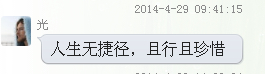

Conversation with 81184027 at Wed 30 Apr 2014 08:44:37 AM CST on 154115835 (webqq)
(04/30/2014 12:24:08 AM) 归家的小羔羊: http://www.fuyin.tv/#4680909-sqq-1-72152-5964d6860be91dc156661fb7624bb8a0
(04/30/2014 12:24:08 AM) 归家的小羔羊: 福音影视网，了解基督信仰的门户
(04/30/2014 12:28:21 AM) 归家的小羔羊: http://www.fuyin.tv/#4680909-sqq-1-91402-5964d6860be91dc156661fb7624bb8a0
(04/30/2014 12:28:21 AM) 归家的小羔羊: 福音影视网，了解基督信仰的门户
(04/30/2014 12:32:39 AM) 归家的小羔羊: http://www.9ku.com/play/542949.htm#58999-sqq-1-78921-77dc210bac518cb3bb93db4c99d3cae7
(04/30/2014 12:32:39 AM) 归家的小羔羊: 我很喜欢这首歌，有一位神
(04/30/2014 01:03:00 AM) 归家的小羔羊: http://ye-su.cn/lingxiuyinpin/ling-ming-ri-liang/#0-sqq-1-70640-9737f6f9e09dfaf5d3fd14d775bfee85
(04/30/2014 01:03:00 AM) 归家的小羔羊: 灵命日粮，每日的灵粮
(04/30/2014 03:25:29 AM) 湖北-黄冈&雷神: 本人征婚有没有？大齢离异人佳！
(04/30/2014 03:25:43 AM) 湖北-黄冈&雷神: 做上门郎也可以！
(04/30/2014 06:53:42 AM) 安徽-市区&钟馗: http://forum.china.com.cn/forum.php?mod=viewthread&tid=3648380&extra=page%3D1%26filter%3Dtypeid%26typeid%3D850%26typeid%3D850
(04/30/2014 12:24:08 AM) 归家的小羔羊: http://www.fuyin.tv/#4680909-sqq-1-72152-5964d6860be91dc156661fb7624bb8a0
(04/30/2014 12:24:08 AM) 归家的小羔羊: 福音影视网，了解基督信仰的门户
(04/30/2014 12:28:21 AM) 归家的小羔羊: http://www.fuyin.tv/#4680909-sqq-1-91402-5964d6860be91dc156661fb7624bb8a0
(04/30/2014 12:28:21 AM) 归家的小羔羊: 福音影视网，了解基督信仰的门户
(04/30/2014 12:32:39 AM) 归家的小羔羊: http://www.9ku.com/play/542949.htm#58999-sqq-1-78921-77dc210bac518cb3bb93db4c99d3cae7
(04/30/2014 12:32:39 AM) 归家的小羔羊: 我很喜欢这首歌，有一位神
(04/30/2014 01:03:00 AM) 归家的小羔羊: http://ye-su.cn/lingxiuyinpin/ling-ming-ri-liang/#0-sqq-1-70640-9737f6f9e09dfaf5d3fd14d775bfee85
(04/30/2014 01:03:00 AM) 归家的小羔羊: 灵命日粮，每日的灵粮
(04/30/2014 03:25:29 AM) 湖北-黄冈&雷神: 本人征婚有没有？大齢离异人佳！
(04/30/2014 03:25:43 AM) 湖北-黄冈&雷神: 做上门郎也可以！
(04/30/2014 06:53:42 AM) 安徽-市区&钟馗: http://forum.china.com.cn/forum.php?mod=viewthread&tid=3648380&extra=page%3D1%26filter%3Dtypeid%26typeid%3D850%26typeid%3D850
(02:54:38 PM) 安徽-马鞍&心语: 不要且什么且什么啦，感觉太崇拜明星了
(03:38:30 PM) 湖北-黄冈&雷神: 你好
(03:39:03 PM) 湖北-黄冈&雷神: 你喜欢什么明星？
(03:40:09 PM) 湖北-黄冈&雷神: 本人征婚有没有？
(03:48:04 PM) 光: (09:17:13 AM) 小A-江苏: 我觉得爱情真伤人。
(09:17:27 AM) 小A-江苏: 真不知道为什么要有爱情
(09:18:38 AM) 小A-江苏: 1。我以后不会再和好朋友恋爱了
2。我以后应该不会谈很多次恋爱。谈多了。我会觉得恶心。
(09:20:29 AM) 群管理-上海: :face1:
(09:22:26 AM) 小A-江苏: 我现在一直在找对象。真的。不是想找就能找到的
(09:24:12 AM) 群管理-上海: 为何用玫瑰花代表爱情？因为它有刺！会让你伤通！
(09:24:38 AM) fairy-上海: 话不用说太绝对，暂时休息一段时间，当遇到让你心仪的人，一切都会不一样啦！
(09:25:04 AM) 小A-江苏: 为什么有的人能很快从伤痛中走出来啊
(09:25:21 AM) fairy-上海: 是要自己调节的
(09:25:34 AM) fairy-上海: 走不走出来 旁人是看不出来的
(09:25:43 AM) fairy-上海: 都是表面的现象
(09:26:02 AM) fairy-上海: 不要钻牛角尖 不要一直去想 让自己更充实一点
(09:26:05 AM) 小A-江苏: 如果走出来的话。是什么样的一个状态呢。
(09:26:34 AM) 小A-江苏: 我就一直钻牛角尖。
(09:26:37 AM) fairy-上海: 遇到前面的那个人 你不会太激动
(09:26:46 AM) 小A-江苏: 反反复复。心理不平衡
(09:26:53 AM) fairy-上海: 不论是生气、伤心。。。
(09:27:14 AM) fairy-上海: 所以 要换角度 换个心情 用其他的事情来充实自己
(09:27:30 AM) 小A-江苏: 我最初就是觉得他好快。。居然一会会就结婚了。
(09:27:34 AM) fairy-上海: 不要给自己太多的空间和时间去想
(09:27:54 AM) 小A-江苏: 就心理不痛快。就想自己不能输。想比他早结婚
(09:28:04 AM) fairy-上海: 人要是心已经不在你这里 说不定他早就心有所属
(09:28:10 AM) fairy-上海: 也不叫快
(09:28:23 AM) fairy-上海: 这个 没有必要去赌气的
(09:28:40 AM) fairy-上海: 而且 婚姻最好让它成为你一辈子的改变
(09:28:47 AM) fairy-上海: 不要太随性或太随意
(09:29:06 AM) fairy-上海: 慢慢来 一定会找到比他好的另一半
(09:29:10 AM) fairy-上海: 要相信自己
(09:29:30 AM) fairy-上海: 从现在开始 学会充实和完善自己
(09:29:39 AM) fairy-上海: 学习、锻炼、美容
(09:29:51 AM) fairy-上海: 等以后他看到你 让他后悔去吧 呵呵
(09:30:39 AM) fairy-上海: 等你不断地改变，越来越优秀，你身边的桃花会比以前更鲜艳 :face42:
(09:31:07 AM) 小A-江苏: 恩。有道理。。谢谢:face42:
(09:31:35 AM) fairy-上海: 不客气，希望以后的你，每天开开心心都过得充实！:face63:
(04:43:40 PM) 光: 老子的《道德经》及道家哲学思想揭示了宇宙的演变 老子姓李，名耳，字聃。他是我国春秋时期的一位伟大哲学家，同时也是道家学派的创始人。老子写的一部只有五千言的《道德经》，不仅包容了人类社会当中的善恶观、人生观、处事观及养生之道、治国之道，而更重要的是揭示了自然界的演化和宇宙的起源及流变。
一、宇宙的起源及发展
现代科学研究发现：我们的宇宙是在150亿年至200亿 年前的某一时刻，由一个体积极小、质量极密、温度极高的“初始奇点”爆炸形成。而由于大爆炸造成的不断膨胀，又使我们的宇宙空间变得越来越大，但温度也越 来越低。由于温度的不断下降，从而使大量的热气凝聚成了星云、星系等天体，所以说我们的宇宙是由“无中生有”，而又从一个“初始奇点”的大爆炸中逐渐生出 了由无数个天体组成的宇宙。那么，今天的宇宙是否还在不断地变化呢？1916年，伟大的物理学家爱因斯坦在提出了广义相对论的第二年，又将广义相对论运用于宇宙天体学。他认为宇宙不可能是静止不变的，它要么是在继续膨胀，要么应该是在收缩。1927年，美国天文学家哈伯发现绝大多数星系的光谱都在红移，而且红移量同星系的距离成正比，这意味着所有的星系都在离地球而远去，由此证明宇宙确实还处于普遍的膨胀之中。
1940年，天文学家伽莫夫又提出：如宇宙在大爆炸的膨胀中温度会不断下降，那么就应该在宇宙中普遍存在有温度约为5k的背景辐射。到了1965年，科学家们终于发现在宇宙各处存在有温度为2.7k的微波背景辐射，从而科学地证明了宇宙确实是在“无中生有”的大爆炸中诞生。而这一发现又经费里德曼和史蒂芬·霍金等科学家的进一步研究充实，形成了今天更加完善的宇宙大爆炸理论学说。
然而早在2500年前，中国的老子对宇宙的起源和发展就有过十分精辟的论述。《道德经》第四十章曰：“天下万物生 于有，有生于无。”《道德真经注》又曰：“凡有皆于无，故未形无名之时，则为万物之始”。《道德经》第四十二章云：“道生一，一生二，二生三，三生万 物。”老子在第四十章中讲的就是宇宙是由“无中生有”，而在第四十二章中指出的就是宇宙在大爆炸后逐渐形成的天体，及包括我们地球在内的所有万物和自然界 的普遍规律。近年来，科学界已逐渐承认宇宙的起源与中国道家提出的“无中生有”学说极为相近，并认为老子确实是个很了不起的大哲学家。1982年，在英国剑桥大学召开的宇宙起源学术会议上有学者提到：宇宙创生于无的可能性是非常有趣的，应该进一步加以研究。中国两千多年前的“无极生太极”、“有生于无”的观点竟和今天科学研究的理论相吻合，这不能说不是一个奇迹。
《道 德经》第一章曰：“道可道，非常道；名可名，非常名。无名，天地之始；有名，万物之母。”《太上老君说常清静妙经》云：“大道无形，生育天地；大道无情， 运行日月；大道无名，长养万物”。老子在这里又进一步指出：“道”是万物发展的根本及总源，宇宙中的一切都是由“道”而派生。而“道”在自然界中又有无限 的、无所不在的包容性，它在空间上存在于万事、万物之中，在时间上更是无始无终，永恒不灭。故老子在《道德经》第三十四章中云：“大道泛兮，其可左右。万 物恃之以生而不辞。”《淮南鸿烈·原道训上》中说：“夫道者，覆天载地，廊四方，拆八极，高不可际，深不可测，包裹大地，禀授无形”。《太平经》中也讲： “道乃万物之师也”。河上公曰：“道通行天地，无所不入。”
“道” 作为万物之根本，首先在于它有神奇的“造化”之工，是万物之母。“道”作为万物之源，又完全在于它具有无穷无尽的生化功能，是众妙之门。那么“道”究竟谓 何物呢？《道德经》第二十一章中曰：“道之为物，惟恍惟惚。惚兮恍兮，其中有象；恍兮惚兮，其中有物；窈兮冥兮，其中有精，其精甚真，其中有信”。《道德 经》第十四章中又曰：“视之不见，名曰夷；听之不闻，名曰希；搏之不得，名曰微……是谓无状之状，无物之象，是谓惚恍”。以上老子对恍惚状态的描述说的就 是“道”，而老子指的“道”也就包括有我们今天科学中讲的宇宙“初始奇点”。
《河 上公章句》云：“无形者谓道，道无形，故不可名也。始者道本也，土气布化，出于虚无，为天地本始也”。而《云笈七签》中的许多篇章将宇宙生成前的状况描述 的更加形象，如《太上老君开天经》曰：“无天无地，无阴无阳，无日无月，无晶无光，无东无西，无青无黄，无南无北，无柔无刚，无覆无载，无坏无藏，无贤无 圣，无忠无良，……犹处空玄寂寥之外，玄虚之中，视之不见，听之不闻，若言有，不见其形。若言无，万物从之而生”。
据考古工作者在湖北省随县挖掘出战国时期的楚墓中发现，早在2300多 年前的《道德经》就有甲、乙、丙三个版本，而在甲组版本的某些章节与现通行的略有所出入。如甲组第二十五章中曰：“有状混成，先天地生……可以为天下 母”。但在通行本写的是：“有物混成，先天地生……”许多专家认为：“状”要比“物”更符合老子对“道”的描述，因为“物”有现实的“实在性”，而“状” 则兼有“形”与“象”的含义，这样能更准确地表达出老子对“道”的精微认识，所以作者也十分赞同这个看法。我们知道，作为“初始奇点”的“道”虽然是处于 看不见、摸不着的恍惚状态，但又不代表虚空无有，然而如准确地给它起个名字也确实不易。故老子也只好在《道德经》中云：“吾不知其名，字之曰道”。
二、宇宙的最终归宿
继爱因斯坦之后，当代杰出的科学家史蒂芬·霍金最初的成名始于“黑洞”的研究成果。他认为宇宙是有限的，但无法找到边际。时间也是有开始的，大约始于150亿至200亿年之前。为此，霍金在1978年 荣获了世界理论物理研究的最高奖——爱因斯坦奖。那么究竟“黑洞”是个什么呢？一般来说，“黑洞”是一种体积极小、质量极大、引力极强而又看不见的天体。 当一颗恒星耗完最后一点能量的时候，要么被彻底撕裂然后被别的星球“吞食”，要么塌缩成一个可怕的黑点，“吞食”掉经过它的一切物质和能量。“黑洞”的引 力太大了，大到连光线都射不出去，所以我们根本看不到它。“黑洞”这个词是美国物理学家惠勒，在1968年发表的论文《我们宇宙的已知和未知》中首次提出的。他不愿意用“引力塌缩物体”这个词汇，便创造了“黑洞”的名词。如果说“黑洞”是一颗天体发展的最终归宿的话，那么宇宙是否也有尽头与终结呢？
我们知道，宇宙自大爆炸之后就一直处在不断地膨胀之中。有许多证据表明，宇宙还在继续膨胀。目前我们探测到的最远天体已超过了120亿 光年，但那里仍然不是宇宙的尽头，宇宙似乎是有无限的空间。不过大多数科学家认为：宇宙是有限的，但不会有尽头。而宇宙今后的发展有两种可能，要么是继续 膨胀下去，要么到了一定的时候转为收缩。但有一点是可以肯定的，宇宙不论是朝哪个方向发展，都逃脱不了最终走向死亡的命运。我们的生命是在生灭之中发展， 宇宙同样也在生灭当中轮回，宇宙的流变将众多人们美好的愿望化为泡影。有生就有死，这就是不可抗拒的自然规律。
大 家知道，道教对宇宙的形成发展过程有“混元”、“空洞”、“混沌”、“混洞”、“劫运”五个阶段之分。而道教在近两千年前就论述的宇宙周期，竟与当今科学 的发现有着惊人的相似。庄子在《秋水篇》中曰：“道无始终，物有生死”。而自然界中的任何事物都无法违背这个法则。近年来，科学家们已观察到了在宇宙中存 在着大量的“黑洞”现象，而这些“黑洞”都是巨大的恒星收缩和坍塌的结果。但如果有一天当宇宙中的所有恒星全部坍塌成为“黑洞”时，我们的宇宙也就寿满天 年走向死亡。而我们人类与其它万物一样也会在这番轮回中彻底灭亡。老子在《道德经》第二十三章中曰：“天地尚不能久，而况人乎”。所以说我们的宇宙是有寿 命的，并不是像有些人想象的那样无始无终，我们的宇宙总有一天会不复存在。这就如《道德经》第二十五章中所云：“人法地，地法天，天法道，道法自然”。
三、宇宙生成的前后
前段时间，美国极有影响的权威杂志《科学时代》周刊评选出了在过去25年中最具争议的25个问题，而其中之一就是“在宇宙大爆炸之前发生了什么”？也就是说，在大爆炸的“初始奇点”之前发生了什么事情？由此，又使我们想起了在上个世纪的梵蒂冈发生的一件趣事。1981年， 耶稣教会组织了一次宇宙学会议为伽里略平反。但在会议结束时教皇却意外地宣称：“大爆炸以后的宇宙演化是可以研究的，但不要过问大爆炸本身和大爆炸以前的 事。那是创生时刻，是上帝的事”。然而令人难以理解的是作为当代最伟大的科学家史蒂芬·霍金也说：“在大爆炸奇点处相对论和任何其它物理定律都失效，因此 我们不必讨论大爆炸以前的事”。那么，在大爆炸的“初始奇点”之前真是用什么理论都无法解释吗？
我 们认为，当宇宙中的所有恒星都坍塌成为“黑洞”之后，宇宙就会向相反的方向重新聚集成一个“奇点”，而这个新的“奇点”再次爆炸就是又一轮宇宙的诞生。所 以说，宇宙实际上是一个不断膨胀——凝聚——膨胀——凝聚……的周期性宇宙。老子曰：“有物混成，先天地生。寂兮寥兮！独立而不改，周行不殆”。《太平 经》云：“天道比若循环，周者运行复反始”。《太平经》又云：“无极之政，用者反始，无有穷已”。《中和集》说：“道本至虚，至虚无体，穷于无穷，始于无 始”。
老 子及道家哲学思想不但在广义上告诉我们宇宙是一个不断循环的过程，而且还很清楚地叙述了宇宙在发展中的膨胀与凝聚。《道德经》第二十五章中云：“大曰逝， 逝曰远，远曰反”。老子在这里讲的“大”就是宇宙；“逝”就是膨胀；“远”就是无边；“反”就是凝聚。《道德经》第四十章又云：“反者道之动”。老子告诉 我们，当宇宙向相反的方向发展到极点后就会发生爆炸和膨胀，从而就又会产生出一个新的宇宙。所以说宇宙是在周而复始的循环中不断发展，而“道”却永远没有 始终。故《道德经》第十四章曰：“绳绳不可名，复归于无物。是谓无状之状，无物之象，是谓惚恍。迎之不见其首，随之不见其后”。《太真科》中讲：“混洞之 前，道气未显，于晓莽之中……极道之宗元，诞生乎自然，寿无亿之数，不始不终，永存绵绵”。
据2006年7月的BBC等 媒体报道：美国和英国科学家组成的联合研究小组，在最近又提出了宇宙起源的新理论。他们认为在我们生活的宇宙产生之前，已经有过宇宙存在，而目前的宇宙也 将被未来的新宇宙所取代。据普林斯顿大学的史坦德特教授介绍说：“目前传统的说法是所有的空间、时间、物质与能量都是由一个点发展起来的。之后，这个点就 扩张、冷却成为今天的宇宙。可是现在这个新理淡提出了宇宙有着持续不断的循环，每一个宇宙都在重演着上一个宇宙，但又不是简单的重演着上一个，它可以被视 为是前一个宇宙的孩子……”宇宙何其大，人类何其渺小，历史的长河何其久远。但我们的先哲却能在两千多年前用思想来把握宇宙，这难道说不是个神奇的奥秘 吗？
太 极是道教的一个主要标志，它是中国古代先哲以辨证逻辑的方式对“道”做它出的抽象描述，同时它也是“道”理论的基本全息图。首先它以“太极生两仪，两仪生 四象，四象生八卦……”的方式揭示了物质的无限可分性，同时也像征着宇宙大爆炸后由“奇点”到万物的演变发展过程。而太极图中S形 的两仪除表现了事物的平衡和转化关系外，同时也显示了事物及宇宙由量变到质变的螺旋飞跃规律。而以上这两个过程加上圆周运动又揭示出宇宙由膨胀到收缩，又 由收缩到膨胀的无限循环过程。太极思维在两千多年来对我国的各个方面都产生过巨大的影响，它是一座取之不尽、用之不竭的智慧宝库，历史上曾有许多有识之士 从中探玄求道。南宋的朱熹曾说：“总天地万物之理，便是太极”。英国著名科学家李约瑟也说：“中国传统科学思想的复合体，很可能会在科学发展的最终状态中 发挥大于人们所承认的作用”。
四、老子及道家哲学思想是一座取之不尽的智慧宝库
老子的《道德经》是一部博大精深的伟大哲学著作，它对我国两千多年的文明及对我国古代的政治、哲学、宗教和科学等方面都产生过深远的影响。不难看出，当今国际上一些先进的发明及新颖的理论都在不同程度地曾在中国古老哲学思想中得到过启示。而老子在2500年前所作的论述竟与现代科学如此高度的吻合，也实在是令人惊叹！美国著名的科学家奥本海默曾说：“我们的发展，不过是（中国）古代哲学的例证、促进和精确化而已”。李约瑟博士在《物理学之道》中也讲：“中国古代科学与牛顿相违背，但却和最新的科学相符”。
我 们知道，道家和道教哲学思想中的许多理论本身就是古代先哲在悟道、修行和对自然界的认识过程中产生的。他们在科学不发达的几千年前，通过对事物的仔细观察 及感悟，并用智、慧双观和潜能揭示出的宇宙演变和自然法则，就是在科学技术高度发展的今天看来仍具有其合理性，甚至是某种意义上的指导作用。世界著名物理 学家F卡普拉在其所著的《物理学之道━━近代物理学与东方神秘主义》一书中说：“东方神秘主义提供了一个协调一致和尽善尽美的哲学框架，它能容纳物理学领域最先进的理论……这些概念与东方神秘主义相应思想之间的高度地和谐一致，它为我们近代科学理论提供了最为坚实的哲学基础”。
在 人类对于客观世界的早期认识中，科学和哲学是无法分开的，因为它们所认识的对象都是宇宙和自然，都是为了揭示开其中的奥秘。近二百年来，尤其是天文学和物 理学的发展出现了一个特殊的现象，那就是许多科学家特别是取得了重大理论成果的科学家，都从哲理中找到了解决自然科学的钥匙和武器。美国学者迈克尔·哈特 在其所著的《历史上最有影响的100人》一书中说：“在西方，《道德经》要比孔子或任何儒家的作品更要流行。”著名的理论物理学家海森堡说：“自从十六、十七世纪以来，与科学基本概念密切联系的哲学概念的发展，已成为自然科学巨大发展的前驱”。
我们深信，随着东西方文化的进一步发展及融合，我国传统科学中的种种神奇效应和超前意识必将迎来更加灿烂夺目的光辉。这正如李约瑟博士所说：“在中国文化 技术中，哪里萌发了科学，哪里就可以寻觅到道家的足迹……。而今天保留下来各个时代的中国文化、中国传统……将对日后指引人类世界作出十分重要的贡献”。
(04:50:21 PM) 光: 道德经与宇宙起源 1http://mat1.gtimg.com/app/newvt/share/images/share_icon_1.png 秩名 老子，楚苦县历乡曲仁里人，姓李，名耳，字聃。周守藏室之史也（见史记）。生活在公元前六世纪（与释加牟尼同代）
老子一生只写过一本书即《道德经》，后世人对道德经的 注解均言语模糊，无法尽解。由于现代科学和文明的进步，我们发现老子的许多见解和主张与现代的社会状况有惊人的一致，如：大家均熟知的老子关于：“天之 道，损有余而补不足。人之道，损不足而补有余。”它的前半句与西方的关于经济领域的二八原则极为相似：既：20％的人掌握80％的社会财富，另外80％穷 人掌握20％的社会财富。而且永远是穷人为富人打工赚钱，富人占有穷人所创造的剩余价值。而它的后半句与自然平衡法则正相呼应。
老子之伟大是因为，他对事物的发生、发展的规律进行了深刻的思考，并从中总结出规律，从这一点看他要远高于将一切事物归咎于神的意志的各种宗教。同时 老子从未把自己神格化，他只自称是个修道者。从这一点看，他与任何教派的创始人均不同。从根本上讲，道教不能称之为宗教。因为他从未提到一位人格化的神。 （以道德经来看）
但老子之伟大绝不仅限于此。他的真正意义在于提供了一个人类进化的方向，即通过修道来达到一种得道的境界。进而使人类自身进行生物性进化。
老子的道德经主要讲了三部分事情：
（一） 何为道
（二） 如何修道
（三） 人、事、物的变化规律
在这三部分里，关于事物的变化规律，后世人解注的最为详尽也最为接近真实。
而第二部分如何修道由于老子只从德，为上进行说明，并未从具体方法上讲解，因此后世人分化了许多流派。
但第一部分何为道上。直到今天仍无人对其真实了解，而这却是老子整个思想的核心部分，最应该被解读的部分。
老子开篇第一句话即是“道可道，非常道；名可名，非常名。无名天地之始，有名万物之母”。这句话的真正意义应为“能够被说明的道就不是真正的道，能够 被命名的名，也就不是真正的名称了。”老子要说的真实意图是极言道之深奥难懂，并且难于说明。而第二句无名天地之始，有名万物之母。是说宇宙万物开始的是 一片虚无，当有一个物体出现时即为天地产生的源头。这句话也可以从第三十四章（六十八分章）“天下万物生于有，有生于无”上得到佐证。
关于宇宙的起源，老子在第二十一章上又加以详细说明：原话为“有物混成，先天地生。寂兮、寥兮，独立而不改，周行而不殆，可以为天下母。吾不知其名， 字之曰道，强为之名曰大，大曰逝，逝曰远，远曰反”。现在我们解读一下道德经，老子说有一物自然生成，早于天地生成的时候。一直独立不改，周行反复不停 息，可以叫它宇宙的源头，我不知道它是什么，就给它起名叫道；强行命名叫大，由于大而离去，由于离去而越来越远，由于达到一定的遥远，它又返回到起点，如 此周行反复。凡是读过宇宙大爆炸理论的人都知道，老子说的正是宇宙大爆炸的过程。根据宇宙大爆炸理论，宇宙起源于150亿年前一个极度压缩的物（或叫能量 体）它在150亿年前通过大爆炸产生了最初的质子、电子。各种基本粒子经结合产生了最初的氢原子，无数的氢原子在汇聚成星体后经过核聚变再产生元素周期表 中的各种元素，因而生成宇宙万物。
如果对这段话还有异议，那在第五章中我们看到“天地之间其犹橐龠乎！虚而不屈，动而愈出。”（橐龠：风箱）老子说天地之间就像一个大风箱般膨胀与收缩，虽然空但不屈，动态并且喷出。它很形象地描述了周期性宇宙大爆炸的状态。
关于宇宙的起源。老子在第三十六章又重新提及“道生一，一生二，二生三，三生万物。万物负阴而抱阳，冲气以为和”，我们把这句话反推回去，三生万物何 解，天下万物是不是由三种物质组成的？答案是肯定的。根据现代科学所有的物质均可分为质子、电子、中子这三种基本粒子。而中子恰可以由质子与电子中合而成 （这可以从中子星的由来看到事实，中子星即由于自身引力过大，将电子吸引至原子核表面，使电子、质子中合从而形成全部由中子组成的星球，密度极高）这是二 生三，而一生二，正是宇宙大爆炸的过程。即一、为纯能量体宇宙大爆炸的源头，二、质子、电子。三、中子、质子、电子。如此解释可能有人说为牵强附会，纯属 巧合。那么我们看下一句，万物负阴而抱阳，冲气以为和。在春秋时，周易已经传世，太极生两仪，阴阳对称学说早已传之天下。而老子又是守藏室之史，不可能未 读过周易，但他并未将阴阳对立，而说阳在内，阴在外，以冲气（虚无之气）相联结。这完全违反了易经之说，但却恰恰符合原子核的结构，阳性的质子在中心部位 而阴性的电子在外用电场相联（电场正是无形无质的东西即冲气）另外，如果老子仅从卦象上讲道的话，他应该说道生一，一生二，二生四，这才符合太极、两仪、 四象、八卦的学说。就此我相信老子早在二千五百年前即已知道宇宙大爆炸过程，同时从微观上了解了万物的本质。 但我们不仅要质疑，二千五百年前老子是如何知晓的。在《道德经》中老子详细的阐述了他了解宇宙（天地）的经过。在第十五章老子讲道：“致虚极守静笃，万物 并作，吾以观其复。万物芸芸，各归其根。”这段话是说，老子将自身的精神调整到虚无、极静的状态，这时万物都出现在眼前，我观察它们的本质，发现芸芸万物 都有其根本。那么，为什么老子在极静的状态中会看到万物呢？我们先看一下第十八章的说法“孔德之容，唯道是从。道之为初，惟恍惟惚。惚兮恍，其中有象，恍 兮惚，其中有物。窈兮冥，其中有精。其精甚真，其中有信。自古至今，其名不去，以阅众甫。吾何以知众甫之然哉？以此。”这段话是说，万物万象都是按照道的 规律运行。对道我们很难把握，似乎有物有形象，其中有一精髓的东西，在那里有着从古到今的全部信息，从未消逝，用它可以看到万事万物的变化规律。我怎么会 知道万物的本质呢？就是通过它。这段话让我们联想到老子应该是通过一种修炼达到道的境界，并因此与道的本质发生沟通，并通过道的信息了解了宇宙生发的规 律。我曾经看过一篇报道说有人在某处天空中突然看到一个古代战场，形声并茂，它说明宇宙对事物发生过的历史是有可能记载下来的，而在特定条件下是可以回放 的。这与老子的察万物的本源是否有相同之处呢？
在第十五章，老子又重点讲了这种信息是什么。原话是“视之不见名曰夷，听之不闻名曰希，搏之不得名曰微，此三者不可致诘，故混而为一。其上不明，其下 不昧，绳绳兮不可名，复归于无物，是谓无状之状，无象之象，是谓惚恍。迎之不见其首，随之不见其后。执古之道，以御今之有。能知古始，是谓道纪。”这段话 是说“看它看不见叫夷，听它听不到叫希，想要捉住它捉不到叫微，这三方面已无法再说清，所以混合起来叫一”。（这个一就是道生一的一。）它上无阳面下无阴 面，似乎象绳子在悬拉，又变成没有了。是无形无状无象的东西，所以称它为惚恍。向着它去看不见头面，跟着它又不见尾面，它用原始的自然法则，统御和主宰现 实的宇宙存在。通过它能知道天地如何开始，所以称它为道的纪元。
通过这三段话，我们可以总结出以下几条：
1、 一是能量，是宇宙的起源， 它记录了宇宙的历史。
2、 通过修炼，人可以和一发生沟通。
3、 修炼道必须在某种特定的精神状态下才可能成功。
在前章中，老子提到道生一，一生二，万物生于有，有生于无，显然一不是有即物质，一应该是一种能量，一种场或一种波。这符合爱因斯坦的质能守恒定律， 即E=m.·c2。也就是说老子提到的恰是一种质量转化为能量的反推，即能量转化为质量（也符合宇宙大爆炸理论），这也符合老子对一的无形无象的描述。
那么如果一是一种能量场的话，一切问题均可通解，老子在第三十四章提到“昔之得一者，天得一以清，地得一以宁，神得一以灵，谷得一以盈，万物得一以生，侯王得一以为天下贞。”显然修道的目的是为了得一以生。
如果我们把一看做是宇宙中无处不在的一种生成万物的本源能量，姑且叫它宇宙本源能量场[爱因斯坦晚年致力于的统一场恐怕就是它]，那么修道的目的就是 为了获得这种能生成万物的生机。如果此种场存着一定的频率的话，所谓静坐，坐禅就是为了将自身的生物场的频率调节到与宇宙本源能量场为同一频率，并通过共 振来达到提高或吸收宇宙本源能量的目标。以增强自身的能量并达到长生。而天人合一的根本解释恐怕就在于此。
很多年来，修行的人一直强调由后天转入先天之境。其实是说当一个人在于婴儿状态时，它是无虑无求的状况，它是符合大道的一种状态，正是因为这种状态， 婴儿才会有无限的生机。而成人之后由于各种思虑，欲求等思维，使自身的生物场（或脑电波）已越来越背离了宇宙本源状态，与宇宙本源场的频率发生干扰，也就 愈发难于达到道的境界。
在现代由于电子仪器的广泛使用，使无线电波各种电磁场充诉地球，这种电磁波必然与宇宙本源场发生干扰，人们已难觅静土做修炼场所。尤其是人们功利的思 想倾向更是改变了人的自然生物状态。而道的修行犹重精神修炼，这也是为什么得道之人愈少的原因。那么，现代人该如何修行？我认为以下几条可以考虑。（一） 利用催眠方法或类似催眠的方法，在意念中将人的精神状态调整到平安喜乐，无欲无求之境即大道之境。（二）利用人工模拟强大的宇宙本源能量场强化人自身的生 物场,使人快速得道。
这里就提出一个课题，宇宙本源能量场是一种什么能量，它是否可以人工模拟，如何模拟？我想这还是当代科学家应加以研讨的课题。有一点可以提示：喧嚣的都市与美好的大自然除空气的不同外还有什么不同？
当然，以上方法仍属邪道，正道是按道的法则生活，循序渐进的修道，达到从精神到肉体的统一。
老子已离开我们二千五百年了，可是他的思想必将影响后世千万代子孙。在人类进化的道路上他是一个卓越的巨人，今天我们应该也有责任将他的学术发扬光大，使人类在进化史上迈出新的一步。
(04:54:45 PM) 光: 大爆炸（英语：Big Bang）是描述宇宙诞生初始条件及其后续演化的宇宙学模型，这一模型得到了当今科学研究和观测最广泛且最精确的支持[1][2]。宇宙学家通常所指的大爆炸观点为：宇宙是在过去有限的时间之前，由一个密度极大且温度极高的太初状态演变而来的（根据2013年普朗克卫星所得到的最佳观测结果，宇宙大爆炸距今137.98 ± 0.37亿年[3][4][5][6][7]），并经过不断的膨胀到达今天的状态。
大爆炸这一模型的框架基于爱因斯坦的广义相对论，又在场方程的求解上作出了一定的简化（例如空间的均匀和各向同性）。1922年，苏联物理学家亚历山大·弗里德曼用广义相对论描述了流体，从而给出了这一模型的场方程。1929年，美国物理学家埃德温·哈勃通过观测发现，从地球到达遥远星系的距离正比于这些星系的红移，从而推导出膨胀宇宙的观点。1927年时勒梅特通过求解弗里德曼方程已经在理论上提出了同样的观点，这个解后来被称作弗里德曼－勒梅特－罗伯逊－沃尔克度规。哈勃的观测表明，所有遥远的星系和星团在视线速度上都在远离我们这一观察点，并且距离越远退行视速度越大[8]。如果当前星系和星团间彼此的距离在不断增大，则说明它们在过去曾经距离很近。从这一观点物理学家进一步推测：在过去宇宙曾经处于一个密度极高且温度极高的状态[9][10][11]，大型粒子加速器在类似条件下所进行的实验结果则有力地支持了这一理论。然而，由于当前技术原因，粒子加速器所能达到的高能范围还十分有限，因而到目前为止，还没有证据能够直接或间接描述膨胀初始的极短时间内的宇宙状态。从而，大爆炸理论还无法对宇宙的初始状态作出任何描述和解释，事实上它所能描述并解释的是宇宙在初始状态之后的演化图景。当前所观测到的宇宙中轻元素的丰度，和理论所预言的宇宙早期快速膨胀并冷却过程中，最初的几分钟内通过核反应所形成的这些元素的理论丰度值非常接近，定性并定量描述宇宙早期形成的轻元素丰度的理论被称作太初核合成。
大爆炸一词首先是由英国天文学家弗雷德·霍伊尔所采用的。霍伊尔是与大爆炸对立的宇宙学模型——稳态学说的倡导者，他在1949年3月BBC的一次广播节目中将勒梅特等人的理论称作“这个大爆炸的观点”。虽然有很多通俗轶事记录霍伊尔这样讲是出于讽刺，但霍伊尔本人明确否认了这一点，他声称这只是为了着重说明这两个模型的显著不同之处[12][13][14]。霍伊尔后来为恒星核合成的研究做出了重要贡献，这是恒星内部通过核反应利用轻元素制造出某些重元素的途径。1964年发现的宇宙微波背景辐射是支持大爆炸确实发生的重要证据，特别是当测得其频谱从而绘制出它的黑体辐射曲线之后，大多数科学家都开始相信大爆炸理论了。
目录
1 动机和发展
2 概述
2.1 大爆炸年表
2.2 基本假设
2.3 弗里德曼－勒梅特－罗伯逊－沃尔克度规
2.4 视界
3 观测证据
3.1 哈勃定律和宇宙膨胀
3.2 宇宙微波背景辐射
3.3 原始物质丰度
3.4 星系演变和分布
3.5 其他证据
4 特点、疑点和问题
4.1 视界问题
4.2 平坦性问题
4.3 磁单极子问题
4.4 重子不对称性
4.5 球状星团年龄
4.6 暗物质
4.7 暗能量
5 大爆炸宇宙的未来
6 超越大爆炸理论的物理学
7 哲学和宗教诠释
8 注释
9 参考文献
9.1 引用
9.2 书籍
10 延伸阅读
11 外部链接
动机和发展
大爆炸理论是通过对宇宙结构的实验观测和理论推导发展而来的。在实验观测方面，1912年维斯托·斯里弗首次测量了一个“旋涡星云”（“旋涡星云”是当时对旋涡星系的旧称法）的多普勒频移，其后他又证实绝大多数类似的星云都在退离地球。不过斯里弗尔并没有因此联想到这个观测结果对宇宙学的意义，这也是由于在当时，人们就这些“星云”是否是我们的银河系之外的“岛宇宙”这一问题存在着高度争议[15][16]。在理论研究方面，1917年爱因斯坦将广义相对论理论应用到整个宇宙，发表了标志着物理宇宙学诞生的论文《根据广义相对论对宇宙学所做的考察》。然而从广义相对论出发建立的宇宙模型不是静态的，这和当时静态宇宙的主流观点并不符合，爱因斯坦为此在场方程中加入了一个宇宙学常数来进行修正。1922年，苏联宇宙学家、数学家亚历山大·弗里德曼假设了宇宙在大尺度上均匀和各向同性，利用引力场方程推导出描述空间上均一且各向同性的弗里德曼方程，在这一组方程中宇宙学常数是可以消掉的。通过选取合适的状态方程，从弗里德曼方程得到的宇宙模型是在膨胀的[17]。1924年，埃德温·哈勃测量了最近的“旋涡星云”距地球的距离，其结果证实了它们在银河系之外，本质是其他的星系。1927年，比利时物理学家乔治·勒梅特在不了解弗里德曼工作的情况下独立提出了星云后退现象的原因是宇宙在膨胀[18]。1931年勒梅特进一步提出“原生原子假说”，认为宇宙正在进行的膨胀意味着它在时间反演上会发生坍缩，这种情形会一直发生下去直到它不能再坍缩为止，此时宇宙中的所有质量都会集中到一个几何尺寸很小的“原生原子”上，时间和空间的结构就是从这个“原生原子”产生的[19]。
1924年起，哈勃为勒梅特的理论提供了实验条件：他在威尔逊山天文台利用口径250厘米的胡克望远镜费心建造了一系列天文距离指示仪，这是宇宙距离尺度的前身。这些仪器使他能够通过观测星系的红移量来推测星系与地球之间的距离。他在1929年发现，星系远离地球的速度同它们与地球之间的距离刚好成正比，这就是所谓哈勃定律[8][20]。而勒梅特在理论推测，根据宇宙学原理当观测足够大的空间时，没有特殊方向和特殊点，因此哈勃定律说明宇宙在膨胀[21]。
艺术家绘制的威尔金森微波各向异性探测器（WMAP）采集数据的景象
二十世纪三十年代，还出现了一些尝试解释哈勃所观测现象的非主流宇宙模型（non-standard cosmology），例如米尔恩宇宙（Milne model）[22]、振荡宇宙（cyclic model）（最早由弗里德曼提出，后来的主要推广者是阿尔伯特·爱因斯坦和理查德·托尔曼（Richard Tolman））[23]、弗里茨·兹威基的衰减光子假说（tired light hypothesis）[24]。
第二次世界大战以后，宇宙膨胀的观点引出了两种互相对立的可能理论：一种理论是由勒梅特提出，乔治·伽莫夫支持和完善的大爆炸理论。伽莫夫提出了太初核合成理论[25]，而他的同事拉尔夫·阿尔菲和罗伯特·赫尔曼则理论上预言了宇宙微波背景辐射的存在[26]。另一种理论则是英国天文学家弗雷德·霍伊尔等人提出的稳态理论[27]。在稳恒态宇宙模型里，新物质在星系远离留下的空间中不断产生，从而宇宙在任何时候看上去都基本不变化。具有讽刺意味的是，大爆炸理论的名称却是来自霍伊尔提到勒梅特的理论时所用的称呼，他在1949年3月的一期BBC广播节目《物质的特性》（The Nature of Things）中将勒梅特等人的理论称作“这个大爆炸的观点”[28]:129[注 1]。之后的许多年，这两种理论并立，但射电源计数（source count）等一系列观测证据使天平逐渐向大爆炸理论倾斜。1965年，宇宙微波背景辐射的发现和确认更使绝大多数物理学家都相信[29]：大爆炸是能描述宇宙起源和演化最好的理论。现在宇宙物理学的几乎所有研究都与宇宙大爆炸理论有关，或者是它的延伸，或者是进一步解释，例如大爆炸理论的框架下星系如何产生，早期和极早期宇宙的物理定律，以及用大爆炸理论解释新观测结果等。
二十世纪九十年代后期和二十一世纪初，望远镜技术的重大发展和如宇宙背景探测者（COBE）[30]、哈勃太空望远镜（HST）和威尔金森微波各向异性探测器（WMAP）[31]等空间探测器收集到的大量数据使大爆炸理论又有了新的大突破。宇宙学家从而可以更为精确地测量大爆炸模型中的各种参数，并从中发现了很多意想不到的结果，比如宇宙的膨胀正在加速。
概述
大爆炸年表
通过广义相对论将宇宙的膨胀进行时间反演，则可得出宇宙在过去有限的时间之前曾经处于一个密度和温度都无限高的状态[32]，这一状态被称为奇点，奇点的存在意味着广义相对论理论在这里不适用。而仍然存在争论的问题是，借助广义相对论我们能在多大程度上理解接近奇点的物理学——可以肯定的是不会早于普朗克时期。宇宙极早期这一高温高密的相态被称作“大爆炸”[注 2]，这被看作是我们宇宙的诞生时期。通过观测Ia型超新星来测量宇宙的膨胀，对宇宙微波背景辐射温度涨落的测量，以及对星系之间相关函数的测量，科学家计算出宇宙的年龄大约为137.3 ± 1.2亿年[33]。这三个独立测算所得到的结果相符，从而为具体描述宇宙所包含物质比例的ΛCDM模型提供了有力证据。
关于大爆炸模型中极早期宇宙的相态问题，至今人们仍充满了猜测。在大多数常见的模型中，宇宙诞生初期是由均匀且各向同性的高密高温高压物质构成的，并在极早期发生了非常快速的膨胀和冷却。大约在膨胀进行到10-37秒时，产生了一种相变使宇宙发生暴胀，在此期间宇宙的膨胀是呈指数增长的[34]:191-202。当暴胀结束后，构成宇宙的物质包括夸克-胶子等离子体，以及其他所有基本粒子[35]:210。此时的宇宙仍然非常炽热，以至于粒子都在做着相对论性的高速随机运动，而粒子－反粒子对在此期间也通过碰撞不断地创生和湮灭，从而宇宙中粒子和反粒子的数量是相等的（宇宙中的总重子数为零）。直到其后的某个时刻，一种未知的违反重子数守恒的反应过程出现，它使夸克和轻子的数量略微超过了反夸克和反轻子的数量——超出范围大约在三千万分之一的量级上，这一过程被称作重子数产生。这一机制导致了当今宇宙中物质相对于反物质的主导地位[36]。
随着宇宙的膨胀速度和温度进一步的降低，粒子所具有的能量普遍开始逐渐下降。当能量降低到1太电子伏特（1012eV）时产生了对称破缺，这一相变使基本粒子和基本相互作用形成了当今我们看到的样子[37]。宇宙诞生的10-11秒之后，大爆炸模型中猜测的成分就进一步减少了，因为此时的粒子能量已经降低到了高能物理实验所能企及的范围。10-6秒之后，夸克和胶子结合形成了诸如质子和中子的重子族，由于夸克的数量要略高于反夸克，重子的数量也要略高于反重子。此时宇宙的温度已经降低到不足以产生新的质子－反质子对（类似地，也不能产生新的中子－反中子对），从而即刻导致了粒子和反粒子之间的质量湮灭，这使得原有的质子和中子仅有十亿分之一的数量保留下来，而对应的所有反粒子则全部湮灭。大约在1秒之后，电子和正电子之间也发生了类似的过程。经过这一系列的湮灭，剩余的质子、中子和电子的速度降低到相对论性以下，而此时的宇宙能量密度的主要贡献来自湮灭产生的大量光子（少部分来自中微子）。
在大爆炸发生的几分钟后，宇宙的温度降低到大约十亿开尔文的量级，密度降低到大约海平面附近空气密度的水平。少数质子和所有中子结合，组成氘和氦的原子核，这个过程叫做太初核合成.[38]。而大多数质子没有与中子结合，形成了氢的原子核。随着宇宙的冷却，宇宙能量密度的主要来自静止质量产生的引力的贡献，并超过原先光子以辐射形式的能量密度。在大约37.9万年之后，电子和原子核结合成为原子（主要是氢原子），而物质通过脱耦发出辐射并在宇宙空间中相对自由的传播，这个辐射的残迹就形成了今天的宇宙微波背景辐射[39]。
哈勃超深空场描绘了远古时代的星系图景，根据大爆炸理论，它们处于一个更年轻、更致密且更炽热的宇宙。
虽然宇宙在大尺度上物质几乎均一分布，但仍存在某些密度稍大的区域，因而在此后相当长的一段时间内这些区域内的物质通过引力作用吸引附近的物质，从而变得密度更大，并形成了气体云、恒星、星系等其他在今天的天文学上可观测的结构。这一过程的具体细节取决于宇宙中物质的形式和数量，其中形式可能有三种：冷暗物质、热暗物质和重子物质。目前来自WMAP的最佳观测结果表明，宇宙中占主导地位的物质形式是冷暗物质，而其他两种物质形式在宇宙中所占比例不超过18%[33]。另一方面，对Ia型超新星和宇宙微波背景辐射的独立观测表明，当今的宇宙被一种称作暗能量的未知能量形式主导着，暗能量被认为渗透到空间中的每一个角落。观测显示，当今宇宙的总能量密度中有72%的部分是以暗能量这一形式存在的。根据推测，在宇宙非常年轻时暗能量就已经存在，但此时的宇宙尺度很小而物质间彼此距离很近，因而在那时引力的效果显著从而减缓了宇宙的膨胀。但经过了几十上百亿年的膨胀，不断增长的暗能量开始让宇宙膨胀缓慢加速。表述暗能量的最简洁方法是在爱因斯坦引力场方程中添加所谓宇宙常数项，但这仍然无法回答暗能量的构成、形成机制等问题，以及与此伴随的一些更基础问题：例如关于它状态方程的细节，以及它与粒子物理学中标准模型的内在联系，这些未解决的问题仍然有待理论和实验观测的进一步研究[21]。
所有在暴胀时期以后的宇宙演化，都可以用宇宙学中的ΛCDM模型来非常精确地描述，这一模型来自广义相对论和量子力学各自独立的框架。如前所述，目前还没有广泛接受的模型能够描述大爆炸后大约10-15秒之内的宇宙，一般认为需要一个统合广义相对论和量子力学的量子引力理论来突破这一难题。如何才能理解这一极早期宇宙的物理图景是当今物理学的最大未解决问题之一。
基本假设
大爆炸理论的建立基于了两个基本假设：物理定律的普适性和宇宙学原理。宇宙学原理是指在大尺度上宇宙是均匀且各向同性的。
这些观点起初是作为先验的公理被引入的，但现今已有相关研究工作试图对它们进行验证。例如对第一个假设而言，已有实验证实在宇宙诞生以来的绝大多数时间内，精细结构常数的相对误差值不会超过10-5[40]。此外，通过对太阳系和双星系统的观测，广义相对论已经得到了非常精确的实验验证；而在更广阔的宇宙学尺度上，大爆炸理论在多个方面经验性取得的成功也是对广义相对论的有力支持[注 3]。
假设从地球上看大尺度宇宙是各向同性的，宇宙学原理可以从一个更简单的哥白尼原理中导出。哥白尼原理是指不存在一个受偏好的（或者说特别的）观测者或观测位置。根据对微波背景辐射的观测，宇宙学原理已经被证实在10-5的量级上成立[注 4]，而宇宙在大尺度上观测到的均匀性则在10%的量级[41]。
弗里德曼－勒梅特－罗伯逊－沃尔克度规
广义相对论采用度规来描述时空的几何属性，度规能够给出时空中任意两点之间的间隔。这些点可以是恒星、星系或其他天体，它们在时空中的位置可以用一个遍布整个时空的坐标卡或“网格”来说明。根据宇宙学原理，在大尺度上度规应当是均匀且各向同性的，唯一符合这一要求的度规叫做弗里德曼－勒梅特－罗伯逊－沃尔克度规（FLRW度规）。这一度规包含一个含时的标度因子，它描述了宇宙的尺寸如何随着时间变化，这使得我们可以选择建立一个方便的坐标系即所谓同移坐标系。在这个坐标系中网格随着宇宙一起膨胀，从而仅由于宇宙膨胀而发生运动的天体将被固定在网格的特定位置上。虽然这些同移天体两者之间的坐标距离（同移距离）保持不变，它们彼此间实际的物理距离是正比于宇宙的标度因子而膨胀的[42]。
大爆炸的本质并不是物质的爆炸从而向外扩散至整个空旷的宇宙空间，而是每一处的空间本身随着时间的膨胀，从而两个共动天体之间的物理距离在不断增长。由于FLRW度规假设了宇宙中物质和能量的均匀分布，它只对宇宙在大尺度下的情形适用——对于像我们的星系这样局部的物质聚集情形，引力的束缚作用要远大于空间度规膨胀的影响，从而不能采用FLRW度规。
视界
大爆炸时空的一个重要特点就是视界的存在：由于宇宙具有有限的年龄，并且光具有有限的速度，从而可能存在某些过去的事件无法通过光向我们传递信息。从这一分析可知，存在这样一个极限或称为过去视界，只有在这个极限距离以内的事件才有可能被观测到。另一方面，由于空间在不断膨胀，并且越遥远的物体退行速度越大，从而导致从我们这里发出的光有可能永远也无法到达那里。从这一分析可知，存在这样一个极限或称为未来视界，只有在这个极限距离以内的事件才有可能被我们所影响。以上两种视界的存在与否取决于描述我们宇宙的FLRW模型的具体形式：我们现有对极早期宇宙的认知意味着宇宙应当存在一个过去视界，不过在实验中我们的观测仍然被早期宇宙对电磁波的不透明性所限制，这导致我们在过去视界因空间膨胀而退行的情形下依然无法通过电磁波观测到更久远的事件。另一方面，假如宇宙的膨胀一直加速下去，宇宙也会存在一个未来视界[43]。
观测证据
大爆炸理论最早也最直接的观测证据包括从星系红移观测到的哈勃膨胀、对宇宙微波背景辐射的精细测量、宇宙间轻元素的丰度（参见太初核合成），而今大尺度结构和星系演化也成为了新的支持证据[44]。这四种观测证据有时被称作“大爆炸理论的四大支柱”[45]。
哈勃定律和宇宙膨胀
对遥远星系和类星体的观测表明这些天体存在红移——从这些天体发出的电磁波波长会变长。通过观测取得星体的频谱，而构成天体的化学元素的原子与电磁波的相互作用对应着特定样式的吸收和发射谱线，将两者进行比对则可发现这些谱线都向波长更长的一端移动。这些红移是均匀且各向同性的，也就是说在观测者看来任意方向上的天体都会发生均匀分布的红移。如果将这种红移解释为一种多普勒频移，则可进而推知天体的退行速度。对于某些星系，它们到地球的距离可以通过宇宙距离尺度来估算出。如果将各个星系的退行速度和它们到地球的距离一一列出，则可发现两者存在一个线性关系即哈勃定律[8]：
v = H_0 D\,
其中
v 是星系或其他遥远天体的退行速度
D 是距天体的共动固有距离
H_0 是哈勃常数，根据WMAP最近的测量结果为70.1 ± 1.3千米/秒/秒差距[33]
根据哈勃定律我们的宇宙图景有两种可能：或者我们正处于空间膨胀的正中央，从而所有的星系都在远离我们——这与哥白尼原理相违背——或者宇宙的膨胀是各处都相同的。从广义相对论推测出宇宙正在膨胀的假说是由亚历山大·弗里德曼[17]和乔治·勒梅特[18]分别在1922年和1927年各自提出的，都要早于哈勃在1929年所进行的实验观测和分析工作。宇宙膨胀的理论后来成为了弗里德曼、勒梅特、罗伯逊、沃尔克等人建立大爆炸理论的基石。
大爆炸理论要求哈勃定律v=H_0D\,在任何情况下都成立，注意这里v、D和H_0随着宇宙膨胀都在不断变化（因此哈勃常数H_0实际是指“当前状态下的哈勃常数”）。对于距离远小于可观测宇宙尺度的情形，哈勃红移可以被理解为因退行速度v造成的多普勒频移，但本质上哈勃红移并不是真正的多普勒频移，而是在光从遥远星系发出而后被观测者接收的这个时间间隔内，宇宙膨胀的结果[46]。
天文学上观测到的高度均匀分布且各向同性的红移[8]，以及其他很多观测证据，都支持着宇宙在各个方向上看起来都相同这一宇宙学原理。2000年，人们通过测量宇宙微波背景辐射对遥远天体系统的动力学所产生的影响，证实了哥白尼原理，即地球相对大尺度宇宙来说绝非宇宙的中心[注 5]。早期宇宙来自大爆炸的微波背景辐射温度要显著高于当今的辐射余温，而几十亿年来微波背景辐射均匀降温的事实只能解释为宇宙空间正在进行着度规膨胀，并排除了我们处于接近一个特殊的爆炸中心的位置的可能性。
宇宙微波背景辐射
威尔金森微波各向异性探测器（WMAP）拍摄到宇宙在大爆炸发生后宇宙微波背景的影像
在宇宙诞生的最初几天里，宇宙处于完全的热平衡态，并伴随有光子的不断吸收和发射，从而产生了一个黑体辐射的频谱。其后随着宇宙的膨胀，温度逐渐降低到光子不能继续产生或湮灭，不过此时的高温仍然足以使电子和原子核彼此分离。因而，此时的光子不断地被这些自由电子“反射”，这一过程的本质是汤姆孙散射。由于这种散射的持续存在，早期宇宙对电磁波是不透明的。当温度继续降低到几千开尔文时，电子和原子核开始结合成原子，这一过程在宇宙学中称为复合。由于光子被中性原子散射的几率很小，当几乎所有电子都与原子核发生复合之后，光子的电磁辐射与物质脱耦。这一时期大约发生在大爆炸后三十七万九千年，被称作“最终的散射”时期。这些光子构成了可以被今天人们观测到的背景辐射，而观测到的背景辐射的涨落图样正是这一时期的早期宇宙的直接写照。随着宇宙的膨胀，光子的能量因红移而随之降低，从而使光子落入了电磁波谱的微波频段。微波背景辐射被认为在宇宙中的任何一点都可被观测，并且在各个方向上都（几乎）具有相同的能量密度。
1964年，阿诺·彭齐亚斯和罗伯特·威尔逊在使用贝尔实验室的一台微波接收器进行诊断性测量时，意外发现了宇宙微波背景辐射的存在[29]。他们的发现为微波背景辐射的相关预言提供了坚实的验证——辐射被观测到是各向同性的，并且对应的黑体辐射温度为3K——并为大爆炸假说提供了有力的证据。彭齐亚斯和威尔逊为这项发现获得了诺贝尔物理学奖。
1989年，NASA发射了宇宙背景探测者卫星（COBE），并在1990年取得初步测量结果，显示大爆炸理论对微波背景辐射所做的预言和实验观测相符合。COBE测得的微波背景辐射余温为2.726K，并在1992年首次测量了微波背景辐射的涨落（各向异性），其结果显示这种各向异性在十万分之一的量级[30]。约翰·马瑟和乔治·斯穆特因领导了这项工作而获得诺贝尔物理学奖。在接下来的十年间，微波背景辐射的各向异性被多个地面探测器以及气球实验进一步研究。2000年至2001年间，以毫米波段气球观天计划为代表的多个实验通过测量这种各向异性的典型角度大小，发现宇宙在空间上是近乎平直的。
2003年初，威尔金森微波各向异性探测器（WMAP）给出了它的首次探测结果，其中包括了在当时人们所能获得的最精确的某些宇宙学参数。航天器的探测结果还否定了某些具体的宇宙暴胀模型，但总体而言仍然符合广义的暴胀理论[31]。此外，WMAP还证实了有一片“中微子海”弥散于整个宇宙，这清晰地说明了最早的一批恒星诞生时曾经用了约五亿年的时间才形成所谓宇宙雾，从而开始在原本黑暗的宇宙中发光。2009年5月，普朗克卫星作为用于测量微波背景各向异性的新一代探测器发射升空，它被寄希望于能够对微波背景的各向异性进行更精确的测量，除此之外还有很多基于地面探测器和气球的观测实验也在进行中。
原始物质丰度
采用大爆炸模型可以计算氦-4、氦-3、氘和锂-7等轻元素相对普通氢元素在宇宙中所占含量的比例[38]。所有这些轻元素的丰度都取决于一个参数，即早期宇宙中辐射（光子）与物质（重子）的比例，而这个参数的计算与微波背景辐射涨落的具体细节无关。大爆炸理论所推测的轻元素比例（注意这里是元素的总质量之比而非数量之比）大约为：氦-4/氢 = 0.25，氘/氢 = 10-3，氦-3/氢 = 10-4，锂-7/氢 = 10-7[38]。
将实际测量到的各种轻元素丰度和从光子重子比例推算出的理论值两者比较，可以发现至少是粗略符合。其中理论值和测量值符合最好的是氘元素，氦-4的理论值和测量值接近但仍有差别，锂-7则是差了两倍，即对于后两种元素的情形存在着明显的系统随机误差。尽管如此，大爆炸核合成理论所预言的轻元素丰度与实际观测可以认为是基本符合，这是对大爆炸理论的强有力支持。因为到目前为止还没有第二种理论能够很好地解释并给出这些轻元素的相对丰度，而从大爆炸理论所预言的宇宙中可被“调控”的氦元素含量也不可能超出或低于现有丰度的20%至30%[47]。事实上很多观测也没有除大爆炸以外的理论可以解释，例如为什么早期宇宙（即在恒星形成之前，从而对物质的研究可以排除恒星核合成的影响）中氦的丰度要高于氘，而氘的含量又要高于氦-3，而且比例又是常数。
星系演变和分布
用近红外拍摄天空得到的全景图，显示了银河系以外星系的在宇宙中的分布，其中不同的红移量用不同的颜色标出。
对星系和类星体的分类和分布的详细观测为大爆炸理论提供了强有力的支持证据。理论和观测结果共同显示，最初的一批星系和类星体诞生于大爆炸后十亿年，从那以后更大的结构如星系团和超星系团开始形成。由于恒星族群不断衰老和演化，我们所观测到的距离遥远的星系和那些距离较近的星系非常不同。此外，即使距离上相近，相对较晚形成的星系也和那些在大爆炸之后较早形成的星系存在较大差异。这些观测结果都和宇宙的稳恒态理论强烈抵触，而对恒星形成、星系和类星体分布以及大尺度结构的观测则通过大爆炸理论对宇宙结构形成的计算模拟结果符合得很好，从而使大爆炸理论的细节更趋完善[48][49]。
其他证据
人们通过对哈勃膨胀以及对微波背景辐射的观测，分别估算出了宇宙的年龄。虽然这两个结果彼此曾经存在一些矛盾和争议，但最终还是取得了相当程度上的一致：两者都认为宇宙的年龄要稍大于最老的恒星的年龄。两者的测量方法都是将恒星演化理论应用到球状星团上，并用放射性定年法测定每一颗第二星族恒星的年龄。
大爆炸理论预言了微波背景辐射的温度在过去曾经比现在要高，而对于位于高红移区域（即距离很远）的气体云，通过观测它们对温度敏感的发射谱线已经证实了这个预言。这个预言也意味着星系团中苏尼亚耶夫-泽尔多维奇效应的强度与红移并不直接相关；这一点从目前观测来看应该是近似正确，然而由于苏尼亚耶夫－泽尔多维奇效应的强度还和星系团的本身性质直接关联，并且星系团的性质在宇宙学的时间尺度上会发生根本的变化，因而导致无法精确检验这个猜想的正确性。
特点、疑点和问题
当今的科学家在宇宙学问题上都普遍更青睐大爆炸模型，不过在历史上科学界曾经分成两派，一派是大爆炸模型的支持者，另一派是其他替代宇宙模型的支持者。在宇宙学的整个发展史中，科学界曾经不断争论着哪个宇宙学模型能够最符合地描述宇宙学的观测结果（参见动机和发展一节），大爆炸理论的一些问题也因此浮出水面。在当今的科学界，支持大爆炸理论是压倒性的共识，因此这些曾经提出的问题很多都已经成为了历史，人们为此不断修正和完善大爆炸理论以及获取更佳的观测结果，从而一一获得了这些问题的解释。
大爆炸的核心观点——包括度规膨胀、早期高温态、氦元素形成、星系形成——都是从独立于任何宇宙学模型的实际观测中推论出的，这些实际观测包括轻元素的丰度、宇宙微波背景辐射、大尺度结构、Ia型超新星的哈勃图等。而大爆炸理论发展至今，它的正确性和精确性有赖于很多奇特的物理现象，这些物理现象或者还没有在地面实验中观测到，或者还没被纳入粒子物理学的标准模型中。在这些现象中，暗物质是当前各个实验室所研究的最为活跃的主题[50]。虽然暗物质理论中至今仍然存在一些未得到解决的细节和疑点，诸如星系晕尖点问题和冷暗物质的矮星系问题，但这些疑点的解决只需将来对理论做出进一步的修正，而不会对暗物质这一解释产生颠覆性的影响。暗能量是科学界另一高度关注的领域，但至今仍然不清楚将来是否有可能直接对暗能量进行观测[51]。
另一方面，大爆炸模型中的两个重要概念：暴胀和重子数产生，在某种意义上仍然被认为是具有猜测性质的。它们虽然能够解释早期宇宙的重要性质，却可以被其他解释所替代而不影响大爆炸理论本身[注 6]。如何找到这些观测现象的正确解释仍然是当今物理学最大的未解决问题之一。
视界问题
视界问题来源于任何信息的传递速度不可能超过光速的前提。对于一个存在有限时间的宇宙而言，这个前提决定了两个具有因果联系的时空区域之间的间隔具有一个上界[52]，这个上界被称作粒子视界。从这个意义上看，所观测到的微波背景辐射的各向同性与这个推论存在矛盾：如果早期宇宙直到“最终的散射”时期之前一直都被物质或辐射主导，那时的粒子视界将只对应着天空中大约2度的范围，从而无法解释为何在一个如此广的范围内都具有相同的辐射温度以及如此相似的物理性质。对于这一看似矛盾之处，暴胀理论给出了解决方案，它指出在宇宙诞生极早期（早于重子数产生）的一段时间内，宇宙被均匀且各向同性的能量标量场主导着。在暴胀过程中，宇宙空间发生了指数膨胀，而粒子视界的膨胀速度要远比原先预想的要快，从而导致现在处于可观测宇宙两端的区域完全处于彼此的粒子视界中。从而，现今观测到的微波背景辐射在大尺度上的各向同性是由于在暴胀发生之前，这些区域彼此是相互接触而具有因果联系的。
根据海森堡的不确定性原理，在暴胀时期宇宙中存着微小的量子热涨落，随着暴胀这些涨落被放大到宇观尺度，这就成为了当今宇宙中所有结构的种子。暴胀理论预言这些原初涨落基本上具有尺度不变性并满足高斯分布，这已经通过测量微波背景辐射得到了精确的证实。如果暴胀的确发生过，宇宙空间中的大片区域将因指数膨胀而完全处于我们可观测的视界范围以外。
平坦性问题
宇宙的整体几何形状取决于相对临界密度Ω0值大于、等于还是小于1。图中从上至下所示为具有正曲率的封闭宇宙、具有负曲率的双曲面宇宙和具有零曲率的平坦宇宙。
平坦性问题是一个与弗里德曼－勒梅特－罗伯逊－沃尔克度规相关的观测问题[52]。取决于宇宙的总能量密度是否大于、小于或等于临界密度，宇宙的空间曲率可以是正的、负的或为零的。当宇宙的能量密度等于临界密度时，宇宙空间被认为是平坦的。然而问题在于，任何一个偏离临界密度的微小扰动都会随着时间逐渐放大，但至今观测到的宇宙仍然是非常平坦的[注 7]。如果假设空间曲率偏离平坦所经的时间尺度为普朗克时间即10-43秒，经过几十亿年的演化宇宙将会进入热寂或大挤压状态，这一矛盾从而需要一个解释。事实上，即使是在太初核合成时期，宇宙的能量密度也必须在偏离临界密度不超过10-14倍的范围内，否则将不会形成像我们今天看到的这样[53]。
暴胀理论对此给出的解释为，暴胀时期空间膨胀的速度如此之快，以至于能够将产生的任何微小曲率都抹平。现在普遍认为暴胀导致了现今宇宙空间的高度平坦性，并且其能量密度非常接近临界密度值。
磁单极子问题
关于磁单极子的反对意见源于二十世纪七十年代末，大统一理论预言了空间中的拓扑缺陷将表现为磁单极子，这种缺陷在早期高温宇宙中应当大量产生，从而导致现今磁单极子的密度应当远大于所能观测到的结果。而非常难以理解的是，至今为止人们从未观测到任何磁单极子。解决这一矛盾的理论仍然是暴胀，与抹平空间中的曲率相类似，空间呈指数暴胀也消除了所有拓扑缺陷[54]。
值得一提的是，外尔曲率假说作为暴胀理论的替代理论，同样能够解释视界问题、平坦性问题和磁单极子问题[55][56]。
重子不对称性
至今人们还不理解为什么宇宙中的物质要比反物质多[57]：大爆炸理论认为高温的早期宇宙处在统计平衡态，具有同样数量的重子和反重子；然而观测表明，即使是在非常遥远的地方，宇宙仍然几乎由物质构成。产生这种不对称性的未知过程称作重子数产生，而重子数产生的条件是所谓Sakharov条件必须满足。这些条件包括存在一种过程破坏重子数守恒、电荷共轭不变性和电荷共轭－空间反演不变性必须被破坏、宇宙偏离热平衡态。这三个条件在标准模型的框架内都可得到满足，然而标准模型所预言的此种效应在数量上太小，不足以完全解释重子不对称性的由来[58]。
球状星团年龄
二十世纪九十年代中期，人们发现对球状星团的观测结果与大爆炸理论出现矛盾：人们进行了和球状星团的星族观测相符的计算机模拟，其结果显示这些球状星团的年龄竟然高达150亿年，这与大爆炸理论所预言的宇宙的年龄为137亿年严重不符。九十年代后期，更完善的计算机模拟考虑了恒星风引起的质量损失效应，这一矛盾也基本得到了解决：最新得出的球状星团年龄要比原先的结果小很多[59]。虽然人们还不确定这种方法测定的球状星团年龄到底有多精确，但已经明确的是它们无疑是宇宙中最古老的天体之一。
暗物质
表示宇宙中不同能量密度组成比例的饼图，根据与观测最相符合的ΛCDM模型，有95%的成分都以充满奇异性质的暗物质和暗能量形式存在。
二十世纪七十至八十年代进行的多种观测显示，宇宙中可见的物质含量不足以解释所观测到的星系内部以及星系之间彼此产生的引力强度。这就导致了科学家猜测宇宙中有含量多达90%的物质都属于不会辐射电磁波也不会与普通重子物质相互作用的暗物质。另一方面，若假设宇宙中的大多数物质都是普通重子物质，所得出的一些预言也和观测结果强烈矛盾。例如，如果不假设暗物质的存在，将难以解释为何宇宙中氘的实际含量要比理论上预计的低很多。尽管暗物质这一概念在刚提出时还存在争议，但有多种观测都显示了它的存在，包括微波背景辐射的各向异性、星系团的速度弥散、大尺度结构的分布、对引力透镜的研究、对星系团的X射线观测等[60]。
如要证实暗物质的存在，需要借助它与其他物质的引力相互作用，但至今还没有在实验室中发现构成暗物质的粒子。至今物理学家已经提出了多种粒子物理学理论来试图解释暗物质，同时实验上也存在多个直接实验观测暗物质的探测计划[61]。
暗能量
对Ia型超新星红移－星等之间关系的测量揭示了宇宙自现有年龄的一半时，它的膨胀开始加速。如要解释这种加速膨胀，广义相对论要求宇宙中的大部分能量都具有一个能够提供负压的因子，即所谓“暗能量”。有其他若干证据显示暗能量确实存在：对微波背景辐射的测量显示宇宙空间是近乎平直的，从而宇宙的能量密度需要非常接近临界密度；然而通过引力汇聚对宇宙质量密度的测量表明，宇宙的能量密度只有临界密度的30%左右[21]。由于暗能量并不像普通质量那样发生正常的引力汇聚，它是对那部分“丢失”的能量密度的最好解释。此外有两种对宇宙总曲率的几何测量结果也要求了暗能量的存在，一种借助了引力透镜的频率，另一种则是利用大尺度结构的特征图样作为量天尺。 负压是真空能量的一种性质，但暗能量的本性到底是什么仍然是大爆炸理论的最大谜团之一。目前提出的用于解释暗能量的候选者包括宇宙学常数和第五元素。2008年WMAP团队给出了结合宇宙微波背景辐射和其他观测数据的结果，显示当今的宇宙含有72%的暗能量、23%的暗物质、4.6%的常规物质和少于1%的中微子[33]。其中常规物质的能量密度随着宇宙的膨胀逐渐减少，而暗能量的能量密度却（几乎）保持不变。从而宇宙过去含有的常规物质比例比现在要高，而在未来暗能量的比例则会进一步升高。
在ΛCDM这一当前大爆炸理论的最佳模型中，暗能量被解释为广义相对论中的宇宙学常数。然而，基于广义相对论并能够合理解释暗能量的宇宙学常数值，即使与基于量子引力观点的不成熟估算值比起来仍然令人惊讶地小。在宇宙学常数以及其他解释暗能量的替代理论之间做出比较和选择是当前大爆炸研究领域中活跃的课题之一。
大爆炸宇宙的未来
在发现暗能量之前，宇宙学家认为宇宙的未来存在有两种图景：如果宇宙能量密度超过临界密度，宇宙会在膨胀到最大体积之后坍缩，在坍缩过程中，宇宙的密度和温度都会再次升高，最后终结于同爆炸开始相似的状态——即大挤压[62]；相反，如果宇宙能量密度等于或者小于临界密度，膨胀会逐渐减速，但永远不会停止。恒星形成会因各个星系中的星际气体都被逐渐消耗而最终停止；恒星演化最终导致只剩下白矮星、中子星和黑洞。相当缓慢地，这些致密星体彼此的碰撞会导致质量聚集而陆续产生更大的黑洞。宇宙的平均温度会渐近地趋于绝对零度，从而达到所谓大冻结。此外，倘若质子真像标准模型预言的那样是不稳定的，重子物质最终也会全部消失，宇宙中只留下辐射和黑洞，而最终黑洞也会因霍金辐射而全部蒸发。宇宙的熵会增加到极点，以致于再也不会有自组织的能量形式产生，最终宇宙达到热寂状态。
现代观测发现宇宙加速膨胀之后，人们意识到现今可观测的宇宙越来越多的部分将膨胀到我们的事件视界以外而同我们失去联系，这一效应的最终结果还不清楚。在ΛCDM模型中，暗能量以宇宙学常数的形式存在，这个理论认为只有诸如星系等引力束缚系统的物质会聚集，并随着宇宙的膨胀和冷却它们也会到达热寂。对暗能量的其他解释，例如幻影能量理论则认为最终星系群、恒星、行星、原子、原子核以及所有物质都会在一直持续下去的膨胀中被撕开，即所谓大撕裂[63]。
超越大爆炸理论的物理学
描述宇宙膨胀的艺术构想图，其中横坐标表示宇宙演化的时间，而对应的空间尺寸（包括想象中的不可观测部分）都用相应的圆横截面表示。左端表示在暴胀时期发生的急速膨胀（注意不成实际比例），而当宇宙演化到中期时开始加速膨胀。而微波背景辐射的形成、恒星形成、星系形成以及WMAP的出现都在相应的时间上表示出来。
图片来自2006年的WMAP新闻发布会。
虽然在宇宙学中大爆炸模型已经建立得相当完善，在将来它仍然非常有可能被修正，例如对于宇宙诞生最早期的那一刻人们还几乎一无所知。彭罗斯－霍金奇点定理表明，在宇宙时间的开端必然存在一个奇点。但是，这些理论都是在广义相对论正确的前提下才成立，而广义相对论在宇宙达到普朗克温度之前必须失效，而一个可能存在的量子引力理论则有希望避免产生奇点[64]。
现在已经提出了一些设想，但每一个设想都基于了一些还没有任何验证的假说：
采用哈特尔－霍金无边界条件的时空有限模型；大爆炸理论的确给出了一个有限的时间，但它的成立并不需要奇点的存在[65]。
认为暴胀是由于弦理论中膜的运动的膜宇宙模型[66]；一个前大爆炸模型；认为大爆炸是由于膜彼此碰撞产生的ekpyrotic模型；以及ekpyrotic模型的变种——循环模型，认为这种膜的碰撞是周而复始的。在循环模型中，大挤压跟随在大爆炸之后发生，并且宇宙永不停歇地进行着这种循环[67][68][69]
混沌暴胀理论，在这一理论中宇宙的暴胀会在随机的地方发生局部停止，每一个停止点都会发生自身的大爆炸并由此膨胀出新的气泡宇宙[70][71][72]。
后两类设想都把大爆炸看作只是一个更庞大且更古老的宇宙（即平行宇宙）中的一个事件，而非传统意义上的宇宙开端。
哲学和宗教诠释
大爆炸理论是一种科学理论，它的成立是建立在和观测相符合的基础上的。但作为一个阐述“实在”起源的理论，它对神学和哲学或多或少产生了暗示作用。二十世纪二十至三十年代，几乎每一个主流宇宙学家都更喜欢稳恒态理论，还有很多人指责说大爆炸理论提出的宇宙在时间上的开端是将宗教概念引入了物理学中，这一反对意见后来经常被稳恒态理论的支持者反复提出[73]。而大爆炸理论的创始人之一，乔治·勒梅特是一位罗马天主教神父的事实则更为这种意见添油加醋[74]。1951年11月22日，庇护十二世教皇在教皇科学学会的开幕会上声称大爆炸理论和天主教的创世概念相符合[75]。
自大爆炸理论被主流物理宇宙学界接受以来，已经有多个宗教团体对大爆炸理论做出了反应，其中有些忠实接受了大爆炸理论的科学依据，而有些试图将大爆炸理论和他们自己的宗教教义相统合，有些则是完全反对或忽视了大爆炸理论的证据[76]。
注释
有很多相关报道声称霍伊尔是出于讽刺的目的才如此称呼大爆炸理论，但霍伊尔本人后来否认了这个说法。他指出这种特别的说法只是为了向听众着重说明两个理论的不同。参见肯·克罗斯韦尔所著《The Alchemy of the Heavens》（1995年）第九章（中译本名为《银河系》，黄磷译，海南出版社1999年出版）
关于大爆炸这一阶段持续多久目前还没有定论，有些作者所说的大爆炸仅指最初的奇点，而有些作者则用它指代整个宇宙的历史。通常意义下，至少在合成氦元素的最初几分钟内都可被认为是处于大爆炸期间。
关于验证广义相对论的详细信息和参考参见广义相对论的实验验证。
这里忽略了量级约为0.1%的偶极各向异性，它来源于太阳系在辐射场中的本动速度。
天文学家的测量结果发表在2000年12月的《自然》杂志上，论文标题为《红移量为2.33771的微波背景温度》（The microwave background temperature at the redshift of 2.33771），可以从这里获取ArXiv文档。
如果暴胀的确曾经发生，则重子数产生也必然发生；反之则不然。
以宇宙学常数形式存在的暗能量使宇宙趋向平坦；然而早在暗能量的能量密度在宇宙中居于主导地位之前，我们的宇宙已经处于接近平坦状态达几十亿年。
参考文献
引用
Feuerbacher, B. Evidence for the Big Bang. TalkOrigins. 25 January 2006 [2010-06-11].
Wright, E.L. What is the evidence for the Big Bang?. Frequently Asked Questions in Cosmology. UCLA, Division of Astronomy and Astrophysics. 9 May 2009 [2010-06-11].
Planck reveals an almost perfect universe. Planck. ESA. 2013-03-21 [2013-03-21].
Clavin, W.; Harrington, J.D. Planck Mission Brings Universe Into Sharp Focus. NASA. 21 March 2013 [21 March 2013].
Overbye, D. An Infant Universe, Born Before We Knew. New York Times. 21 March 2013 [21 March 2013].
Boyle, A. Planck probe's cosmic 'baby picture' revises universe's vital statistics. NBC News. 21 March 2013 [21 March 2013].
How Old is the Universe?. WMAP - Age of the Universe. NASA. 21 December 2012 [2013-01-01].
Hubble, E.. A Relation Between Distance and Radial Velocity Among Extra-Galactic Nebulae. Proceedings of the National Academy of Sciences. 1929, 15 (3): 168–73. doi:10.1073/pnas.15.3.168. PMC 522427. PMID 16577160.
Gibson, C.H. The First Turbulent Mixing and Combustion. IUTAM Turbulent Mixing and Combustion. 21 January 2001.
Gibson, C.H.. Turbulence And Mixing In The Early Universe. arXiv:astro-ph/0110012 [astro-ph]. 2001.
Gibson, C.H.. The First Turbulent Combustion. arXiv:astro-ph/0501416 [astro-ph]. 2005.
'Big bang' astronomer dies. BBC News. 22 August 2001 [2010-06-15].
Croswell, K. Chapter 9//The Alchemy of the Heavens. Anchor Books. 1995.
Mitton, S. Fred Hoyle: A Life in Science. Aurum Press. 2005. 127.
Slipher, V.M. The Radial Velocity of the Andromeda Nebula. Lowell Observatory Bulletin: 56–57.
Slipher, V.M. Spectrographic Observations of Nebulae. Popular Astronomy: 21–24.
Friedman, A.A.. Über die Krümmung des Raumes. Zeitschrift für Physik. 1922, 10: 377–386. doi:10.1007/BF01332580. （德文）
（英语译文见：Friedman, A. On the Curvature of Space. General Relativity and Gravitation. 1999, 31: 1991–2000. doi:10.1023/A:1026751225741.）
Lemaître, G.. Un univers homogène de masse constante et de rayon croissant rendant compte de la vitesse radiale des nébuleuses extragalactiques. Annals of the Scientific Society of Brussels. 1927, 47A: 41. （法文）
（英语译文见：A Homogeneous Universe of Constant Mass and Growing Radius Accounting for the Radial Velocity of Extragalactic Nebulae. Monthly Notices of the Royal Astronomical Society. 1931, 91: 483–490.）
Lemaître, G.. The Evolution of the Universe: Discussion. Nature. 1931, 128: 699–701. doi:10.1038/128704a0.
Christianson, E. Edwin Hubble: Mariner of the Nebulae. New York（NY）: Farrar, Straus and Giroux. 1995. ISBN 0374146608.
Peebles, P.J.E.; Ratra, Bharat. The Cosmological Constant and Dark Energy. Reviews of Modern Physics. 2003, 75: 559–606. doi:10.1103/RevModPhys.75.559. arXiv:astro-ph/0207347.
Milne, E.A. Relativity, Gravitation and World Structure. Oxford（UK）: Oxford University Press. 1935. LCCN 35-19093.
Tolman, R.C. Relativity, Thermodynamics, and Cosmology. Oxford（UK）: Clarendon Press. 1934. LCCN 34-32023.
Reissued (1987). New York (NY): Dover Publications ISBN 0-486-65383-8.
Zwicky, F. On the Red Shift of Spectral Lines through Interstellar Space. Proceedings of the National Academy of Sciences. 1929, 15 (10): 773–779. doi:10.1073/pnas.15.10.773. PMC 522555. PMID 16577237. Full articlePDF (672 KB)
Alpher, R.A.; Gamow, G.; Gamow, G. The Origin of Chemical Elements. Physical Review. 1948, 73: 803. doi:10.1103/PhysRev.73.803.
Alpher, R.A.. Evolution of the Universe. Nature. 1948, 162: 774. doi:10.1045/march2004-featured.collection.
Hoyle, F.. A New Model for the Expanding Universe. Monthly Notices of the Royal Astronomical Society. 1948, 108: 372.
Mitton. Fred Hoyle: A Life in Science. Cambridge University Press. ISBN 978-1-139-49595-0."To create a picture in the mind of the listener, Hoyle had likened the explosive theory of the universe's origin to a 'big bang'"
Penzias, A.A.; Wilson, R. W. A Measurement of Excess Antenna Temperature at 4080 Mc/s. Astrophysical Journal. 1965, 142: 419. doi:10.1086/148307.
Boggess, N.W., et al.; Mather, J. C.; Weiss, R.; Bennett, C. L.; Cheng, E. S.; Dwek, E.; Gulkis, S.; Hauser, M. G. et al. The COBE Mission: Its Design and Performance Two Years after the launch. Astrophysical Journal. 1992, 397: 420. doi:10.1086/171797.
Spergel, D.N., et al.. Wilkinson Microwave Anisotropy Probe (WMAP) Three Year Results: Implications for Cosmology. The Journal of Business. 2006 [2010-06-25].
Hawking, S.W.; 乔治·埃利斯. The Large-Scale Structure of Space-Time. Cambridge（UK）: Cambridge University Press. 1973. ISBN 0-521-20016-4.
Hinshaw, G., et al.. Five-Year Wilkinson Microwave Anisotropy Probe (WMAP) Observations: Data Processing, Sky Maps, and Basic Results (PDF). The Astrophysical Journal. 2008.
Barbara Sue Ryden. Introduction to cosmology. Addison-Wesley. 2003. ISBN 978-0-8053-8912-8.
Guth, A.H. The Inflationary Universe: Quest for a New Theory of Cosmic Origins. Vintage Books. 1998. ISBN 978-0099959502.
Kolb and Turner (1988), chapter 6
Kolb and Turner (1988), chapter 7
Kolb and Turner (1988), chapter 4
Peacock (1999), chapter 9
Ivanchik, A.V. The Fine-Structure Constant: A New Observational Limit on Its Cosmological Variation and Some Theoretical Consequences. Astronomy and Astrophysics. 1999, 343: 459.
Goodman, J. Geocentrism Reexamined. Physical Review D. 1995, 52: 1821. doi:10.1103/PhysRevD.52.1821.
d'Inverno, R. Chapter 23//Introducing Einstein's Relativity. Oxford（UK）: Oxford University Press. 1992. ISBN 0-19-859686-3.
Kolb and Turner (1988), chapter 3
Gladders, M.D., et al.; Yee, H. K. C.; Majumdar, Subhabrata; Barrientos, L. Felipe; Hoekstra, Henk; Hall, Patrick B.; Infante, Leopoldo. Cosmological Constraints from the Red-Sequence Cluster Survey. The Astrophysical Journal. 2007, 655 (1): 128–134. doi:10.1086/509909.
The Four Pillars of the Standard Cosmology
Peacock (1999), chapter 3
Steigman, G. Primordial Nucleosynthesis: Successes And Challenges. 2005. arXiv:astro-ph/0511534.
Bertschinger, E. Cosmological Perturbation Theory and Structure Formation. 2001. arXiv:astro-ph/0101009.
Bertschinger, E. Simulations of Structure Formation in the Universe. Annual Review of Astronomy and Astrophysics. 1998, 36: 599–654. doi:10.1146/annurev.astro.36.1.599.
Direct Searches for Dark Matter, White paper, The National Academies.
Whitepaper: For a Comprehensive Space-Based Dark Energy Mission, The National Academies.
Kolb and Turner (1988), chapter 8
Dicke, R.H.; Peebles, P.J.E. The big bang cosmology—enigmas and nostrums//Hawking, S.W. (ed); Israel, W.（ed）. General Relativity: an Einstein centenary survey. Cambridge University Press: pp. 504–517.
Kolb and Turner, chapter 8
Penrose, R.. Singularities and Time-Asymmetry//Hawking, S.W. (ed); Israel, W.（ed）. General Relativity: An Einstein Centenary Survey. Cambridge University Press. 1979: pp. 581–638.
Penrose, R.. Difficulties with Inflationary Cosmology//Fergus, E.J.（ed）. Proceedings of the 14th Texas Symposium on Relativistic Astrophysics. New York Academy of Sciences. 1989: pp. 249–264. doi:10.1111/j.1749-6632.1989.tb50513.x.
Kolb and Turner, chapter 6
Sakharov, A.D. Violation of CP Invariance, C Asymmetry and Baryon Asymmetry of the Universe. Zhurnal Eksperimentalnoi i Teoreticheskoi Fiziki, Pisma. 1967, 5: 32. （俄文）
:（英语译文见Journal of Experimental and Theoretical Physics Letters 5, 24（1967））
Navabi, A.A.; Riazi, Nematollah. Is the Age Problem Resolved?. Journal of Astrophysics and Astronomy. 2003, 24: 3. doi:10.1007/BF03012187.
Keel, B. Dark Matter. [2010-06-18].
Yao, W.M., et al.. Review of Particle Physics. Journal of Physics G. 2006, 33: 1–1232. doi:10.1088/0954-3899/33/1/001. Chapter 22: Dark matterPDF (152 KB)
Kolb and Turner, 1988, chapter 3
Caldwell, R.R; Kamionkowski, Marc; Weinberg, Nevin N. Phantom Energy and Cosmic Doomsday. Physical Review Letters. 2003, 91: 071301. doi:10.1103/PhysRevLett.91.071301. arXiv:astro-ph/0302506.
Hawking, S.W.; Ellis, G.F.R. The Large Scale Structure of Space-Time. Cambridge（UK）: Cambridge University Press. 1973. ISBN 0-521-09906-4.
Hartle, J.H.; Hawking, S. Wave Function of the Universe. Physical Review D. 1983, 28: 2960. doi:10.1103/PhysRevD.28.2960.
Langlois, D. Brane Cosmology: An Introduction. 2002. arXiv:hep-th/0209261.
Linde, A. Inflationary Theory versus Ekpyrotic/Cyclic Scenario. 2002. arXiv:hep-th/0205259.
Than, K. Recycled Universe: Theory Could Solve Cosmic Mystery. Space.com. 2006 [2010-06-18].
Kennedy, B. K. What Happened Before the Big Bang?. 2007 [3 July 2007]. （原始内容存档于4 July 2007）.
Linde, A. Eternal Chaotic Inflation. Modern Physics Letters. 1986, A1: 81.
Linde, A. Eternally Existing Self-Reproducing Chaotic Inflationary Universe. Physics Letters B. 1986, 175: 395–400. doi:10.1016/0370-2693(86)90611-8.
Khoury1, J.; Ovrut, B. A.; Seiberg, N.; Steinhardt, P. J.; Turok, N. From big crunch to big bang. Physical Review D. 2002, 65 (8): 086007. doi:10.1103/PhysRevD.65.086007.
Kragh, H. Cosmology and Controversy. Princeton（NJ）: 普林斯顿大学出版社. 1996. ISBN 0-691-02623-8.
People and Discoveries: Big Bang Theory, www.pbs.org
Ferris, Timothy. Coming of age in the Milky Way. Morrow. 1988: 274, 438. ISBN 9780688058890.，引用了Berger, André. The Big bang and Georges Lemaître: proceedings of a symposium in honour of G. Lemaître fifty years after his initiation of big-bang cosmology, Louvainla-Neuve, Belgium, 10-13 October 1983. D. Reidel Pub. Co. 1984. 387. ISBN 9789027718488.
Wright, E.L. Cosmology and Religion. Ned Wright's Cosmology Tutorial. 24 May 2009 [2010-06-18].
书籍
Edward W. Kolb, Michael S. Turner编撰. The Early Universe. Addison–Wesley. 1988. ISBN 0-201-11604-9.
Peacock, John. Cosmological Physics. Cambridge University Press. 1999. ISBN 0521422701.
延伸阅读
Singh, Simon. Big Bang: The origins of the universe. New York: Fourth Estate. 2004. ISBN 0007162200.
Paul Davies. The Mind of God: The scientific basis for a rational world. New York: Simon & Schuster UK. 1992. ISBN 0-671-71069-9.
Cosmic Journey: A History of Scientific Cosmology. American Institute of Physics.
Feuerbacher, Björn; Ryan Scranton. Evidence for the Big Bang. 2006.
Misconceptions about the Big Bang. Scientific American. 2005.3.
Michael Riordan; William Zajc. The First Few Microseconds. Scientific American. 2006.5.
Matts Roos. Expansion of the Universe – Standard Big Bang Model. University of Helsinki, astro-ph. 2008.2.
Weinberg, Steven. Gravitation and Cosmology. John Wiley. 1971. ISBN 0-471-92567-5.
Weinberg, Steven. Cosmology. Oxford University Press. 2008. ISBN 0198526822.
外部链接
开放式目录计划中的Cosmology相关内容
大爆炸模型的动画演示
(05:29:45 PM) 光: 1927年，比利时物理学家乔治·勒梅特在不了解弗里德曼工作的情况下独立提出了星云后退现象的原因是宇宙在膨胀[18]。1931年勒梅特进一步提出“原生原子假说”，认为宇宙正在进行的膨胀意味着它在时间反演上会发生坍缩，这种情形会一直发生下去直到它不能再坍缩为止，此时宇宙中的所有质量都会集中到一个几何尺寸很小的“原生原子”上，时间和空间的结构就是从这个“原生原子”产生的[19]。
(05:34:13 PM) lost message from #90915 to #90916
(05:34:18 PM) 埃及舞雪: 宇宙很神奇啊，一花一世界
(05:34:44 PM) 埃及舞雪: 我们都不知道这个宇宙究竟的真实面目啊
(05:35:02 PM) 光: 嗯
(05:36:59 PM) 光: 自大爆炸理论被主流物理宇宙学界接受以来，已经有多个宗教团体对大爆炸理论做出了反应，其中有些忠实接受了大爆炸理论的科学依据，而有些试图将大爆炸理论和他们自己的宗教教义相统合，有些则是完全反对或忽视了大爆炸理论的证据[76]。
(06:12:01 PM) lost message from #90921 to #90922
(06:12:06 PM) 地球女儿: 【地球女儿分享】1：你知道今天是“国际不打小孩日”吗？ 8-):敲打:
静 虹
去年听说这个节日时就大为惊诧：不打小孩还要定国际日？真是人类的悲哀啊！是不是有一天还会出现个“国际人不吃人日”呢？那将是人类的灾难呐！ :Q
摘发一段曾经分享过的文章，全文见我微信公众平台2013.12.19文章。
我还看到一篇教育学博士写的文章《怎样打孩子》，所支招术为：第一，打孩子不能带有愤怒；第二，不能用手打，要用棍子打；第三，打之前要用语言交流，说明为什么打，打几下；第四，要心怀大爱地去打。想想啊，一个成年人怀着一腔爱，提着棍子，没有愤怒，心平气和地计着数打一个孩子——这要有多变态才能做到呢！:骷髅::b
一件事，如果大前提是错误的，没有一个小手段值得肯定，这正如有人写《做小偷的十大技巧》，写得再好，也是在露丑露怯，应该受到鄙视和唾弃。:敲打::T
我猜测，这位博士也是童年家暴的受害者，童年创伤深入骨髓，不平等感和自卑感成为植入他体内的不可分割的一部分，以至于成年后，尤其取得一定成就后，潜意识出于对不平等和自卑的反抗，必须要想办法拔高自身，甚至是缺陷的部分也努力美化为优点。童年屈辱被粉饰为方式特别的父爱母爱，家暴伤痕于是演绎成他心目中值得炫耀的纹身。即使从事了教育研究，学习了很多专业知识，也褪不去严厉教育的底色，走不出粗暴教育的框架。:敲打::b
这种情况非常多，在很多“成功人士”身上都表现得很典型，当他们回首成长经历时，会忽略那些真正助他们成功的要素，却特别喜欢拿儿时挨打受骂来说事，并会真正地热爱上严厉教育——这真是个很有趣又令人感叹的现象。 :-|:b
——摘自尹建莉《严厉教育是危险教育》全文见我微信公众平台：diqiunver66
(06:15:32 PM) lost message from #90924 to #90924
(06:15:37 PM) pastorqi: 4月30，2014年的第120天。
天天主恩惠,福满溢灵程!
愿我们收获活水吗哪，对神发出感谢赞美
旧约 士 11：-12:
诗 101:
箴 14:13-14
新约 约1：1-28
(08:06:13 PM) 湖北-黄冈&雷神: 征婚老婆你在哪里？？
(08:37:19 PM) 醒悟: :D在发廊去吧
(09:35:39 PM) 光: 人们常犯的逻辑错误有哪些？ 1 条评论 分享 按票数排序 按时间排序 26 个回答 http://p4.zhimg.com/62/35/62358a989_s.jpg Calon，基本无害 落落、游克、画眉 等人赞同 兩難推理（False Dilemma）
錯謬：為多於一個答案的問題提供不足（通常兩個）的選擇，即是隱藏了一些選擇，最典型的表現是非黑即白觀點。
例子：薩達姆是邪惡的，所以美軍是正義之師。
解釋：世上除「正邪之爭」外，還有「邪邪之爭」及許多難分正邪的紛爭，所以不能單以薩達姆的邪惡便認定美軍是正義的。
訴諸無知（From Ignorance）
錯謬：因為不能否定，所以必然肯定，反之亦然。
例子：沒有人能證明鬼不存在，那麼鬼肯定存在。
解釋：總有些事是既不能否定，亦不能肯定的。除了肯定和否定，我們還可以存疑吧！
滑坡謬誤（Slippery Slope）
錯謬：不合理使用連串因果關係。
例子：遲到的學生要判死刑。因為遲到是不用功的表現；將來工作也不勤力；不勤力導致公司損失；公司損失就會倒閉；公司倒閉會使人失業；失業造成家庭問題；家庭問題導致自殺率上升，為了防止自殺率上升，我們應判遲到的學生死刑。
解釋：滑坡謬誤中假定了連串「可能性」為「必然性」。比方說，遲到是否「必然」是不用功的表現？將來工作又是否「必然」不勤力？答案可想而知。例子雖然誇張，但其實許多時候大家亦會犯相同錯誤而不自知。
複合問題（Complex Question）
錯謬：一條問題內包含兩個無關的重點。
例子：你還有沒有幹那非法勾當？（你有幹非法勾當嗎？是否還有繼續？）
解釋：簡單的一句提問，其實隱藏了兩個問題。你給予其中一條問題的答案，並不一定和另
外一條的一樣。例如你有幹非法勾當，但未必等於你還有繼續。
訴諸其他支持（Appeals to Motives in Place of Support）
訴諸勢力 / 武力（Appeal to Force）
錯謬：以勢力服人。
例子：若你不想被解僱，你必須認同公司的制度。
解釋：這是以工作機會強迫員工認同制度，員工不是依據制度好壞來決定認同與否。
訴諸憐憫（Appeal to Pity）
錯謬：以別人的同情心服人。
例子：希望你接受我這個多月來天天通宵撰寫的建議書。
解釋：建議書的好壞，不在乎花了多少時間，而是取決於其內容，提出「多月來天天通宵撰寫」只為搏取同情。
訴諸結果（Consequences）
錯謬：以討好或不討好的結果服人。
例子：你若不聽我的話，我便打你，不准你外出，扣起你的零用。
解釋：誰願意被打？又有誰願意被扣零用？但這並不表示因此你要聽我的話是合理的。
訴諸不中肯字詞（Prejudicial Language）
錯謬：以不中肯的字詞修飾論點。
例子：凡是愛國的人都會認同訂立國家安全法的必要。
解釋：怎樣才是「愛國」？如果所訂立的國家安全法是不合人道的，是違法的，難道我們還要認同嗎？
訴諸大眾（Popularity）
錯謬：以被廣泛接納為理由服人。
例子：看！人人都這樣說，還會錯嗎？
解釋：它是量化問題的一種；難道眾口一詞，則「指鹿可以為馬」嗎？
一廂情願（Wishful Thinking）
錯謬：以自己單方面想法作為論證根據。
例子：因為我希望明天在戶外打球，所以明天一定天晴。
解釋：這只表示個人願望，並不能作推論根據。
改變話題（Changing the Subject）
人身攻擊（Attacking the Person）
錯謬〔一〕：以攻擊發言人代替攻擊其論點（因人廢言）。
例子 ：張廠長反對陳主任增加成本會計部的建議：「你當然說成本會計十分重要，因為你是會計主任。」
錯謬〔二〕：由回應論點改變為攻擊論點發起人的處境。
例子 ：你竟相信那些草根階層的說話？
錯謬〔三〕：提出「你也是！」的不恰當反問作論據。
例子 ：父：吸煙對健康不好！兒：為什麼你也吸？
訴諸權威（Appeal to Authority）
錯謬〔一〕：訴諸討論的範疇以外的權威人士。
例子 ：經濟學家都認為愛因斯坦的相對論是不可能的。
錯謬〔二〕：訴諸權威人士的個人意見。
例子 ：羅局長說：「學生是政府的政策下最大得益者，所以學生無權批評領導人」
解釋 ：學生是政府的政策下最大得益者只是羅局長的說話，事實上學生是否政府的政策下最大得益者，卻沒有一個客觀答案。
錯謬〔三〕：該範疇的權威人士不是認真的回應。（例如：只是在開玩笑／喝醉。）
例子 ：「有香車自然有美人，ＢＥＮＺ的總公司董事長都這樣說啦！」
匿名權威（Anonymous Authority）
錯謬：匿名的權威人士使人不能確定其權威性。
例子：有位心理學家曾經說過，每人都有犯罪傾向。
解釋：這位心理學家是誰？是陳志偉老師？但他沒有修讀心理科呢！
作風蓋過本體（Style Over Substance）
錯謬：討論者以作風蓋過事件本身使人認為其論點正確。 (因人廢言的一種變奏)
例子：以他一向的對人的態度，他一定不會對你好的。
歸納的謬誤（Inductive Fallacies）
輕率的歸納（Hasty Generalization）
錯謬：用作歸納總體的樣本太少。
例子：我問了十個人，有九個說反對民主黨。結論：原來九成香港人反對民主黨。
解釋：單憑十個人論斷香港七百萬人？未免太輕率吧。若說訪問了數萬人，得出來的結果便較有說服力。
不具代表性的例子（Unrepresentative Sample）
錯謬：用作歸納的例子不能代表其總體。
例子：葉繼歡持械行劫；林過雲姦殺多女；歐陽炳強紙盒藏屍。香港人肯定有殺人傾向。
不當類比（Weak Analogy）
錯謬：以兩件不相似的事件／事物作類比。
例子：他對朋友這麼好，對女朋友一定很好呢。
懶散的歸納（Slothful Induction）
錯謬：否定歸納得出來的恰當結論。
例子：即使有萬多個實驗證明化學物質影響我們的感覺，我就是不相信。
排除證據謬誤（Fallacy of Exclusion）
錯謬：故意把重要的證據隱藏，以得出不同的結論。
例子：秦始皇修長城，卻匈奴，統一文字度量，為中國建立國家規模，確是明君。
解釋：他的暴虐又應如何看待？
統計三段論的謬誤（Fallacies Involving Statistical Syllogisms）
例外（Accident）
錯謬：以概括情況加諸應有的例外情況。(由普遍推出個別)
例子： 政府法例規定，行走此公路的汽車最高時速為七十公里。所以即使載著快要生產的產婦，亦不可開得快過七十公里。
解釋：法律不礙人情呢！
相反的例外（Converse Accident）
錯謬：以例外情況加諸應有的概括情況。(由個別推出普遍)
例子：我們准許瀕死的病人注射海洛英。基於人人平等，也應讓其他人注射海洛英。
因果的謬誤（Causal Fallacies）
巧合謬誤（Coincidental Correlation）
錯謬：以個別情況肯定某種因果關係。
例子：希希吃了一種藥，出現過敏反應。因此，希希認為這種藥必然導致過敏反應。
解釋：希希遇到的只是個別例子，不能因此論斷該藥必然導致過敏反應。
複合結果（Joint Effect）
錯謬：當兩件事都為某原因的結果時，以一事為另一事的原因。
例子：記者報導離鄉背井的戰爭難民中的一家人：「他們因為房子被炮火所毀而逃到這裡。」
解釋：炮火導致這家人的房子被毀及離鄉逃難；房子被毀並不導致這家人離開原居地。
無足輕重（Genuine but Insignificant Cause）
錯謬：舉出無足輕重的次要原因論證，遺漏真正的主因。
例子：吸煙使香港空氣質素每況愈下。
解釋：導致香港空氣質素差的主因是交通公具的廢氣和天氣情況。
倒果為因（Wrong Direction）
錯謬：顛倒事件的因果關係。
例子：癌症導致吸煙
解釋：吸煙才是癌症的原因。
複合原因（Complex Cause）
錯謬：只指出多個原因中的其中一個為事件主因。
例子：你一日到晚都只是玩遊戲機而不溫習，難怪你考試成績那麼差。
解釋：除了玩遊戲機而不溫習外，還有其他原因，例如考試期間一時大意或者試題太難，但它們和玩遊戲機一樣，不一定是主因。
論點缺失謬誤（Missing the Point）
乞求／竊取論點（Begging the Question）
錯謬：以假定正確的論點得出結論。
例子：我知道有上帝，因為《聖經》是這樣說，而《聖經》是不會錯，因為它是上帝寫的。
不恰當結論（Irrelevant Conclusion）
錯謬：提出作支持的論據主要支持其他結論。
例子：
稻草人謬誤（Straw Man）
錯謬：扭曲對方論據以攻擊之。
例子：進化論說人是由猩猩演化而來。
解釋：進化論只是說人和猩猩有共同祖先。
含糊不清謬誤（Fallacies of Ambiguity）
含糊其辭（Equivocation）
錯謬：使用有多於一個含義的字眼。
例子：甲：喇叭中學又發生學生毆鬥事件。乙：噢！是九龍那所嗎？甲： &%^%$&%$#...
解釋：甲這裡沒有表明是新界喇叭，使乙誤會成九龍的喇叭書院。
模稜兩可（Amphiboly）
錯謬：句子結構含多種解釋方法。
例子：下雨天留客天留我不留。
重音謬誤（Accent）
錯謬：以重音強調某字眼或字句，達致其他意思。
例子：難道你這個黑人可以在我們白人議會說話嗎？
類目錯誤（Category Errors）
構成謬誤（Composition）
錯謬：以總體的某部份符合某條件推斷總體均符合某條件。 (由個別推出普遍)
例子：熱火隊奧尼爾的身裁如此厲害，熱火隊的身裁亦一定如此厲害。
解釋：奧尼爾是一位球員，但誰人叫熱火隊？
分割謬誤（Division）
錯謬：以總體符合某條件推斷總體的所有部份均符合某條件。 (由個別推出普遍)
例子：熱火隊奧尼爾的身裁如此厲害，熱火隊的其他隊員身裁亦一定如此厲害，例如積遜威廉斯。
解釋：他們的身裁是小巫見大巫之別呢！
不根據前題的推理（Non Sequitur）
肯定後件（Affirming the Consequent）
錯謬：所有依此結構的推論：若A則必定B；B，所以便A。
例子：如果他在中環，他一定在港島。因此如果他現在在港島，他一定在中環。
解釋：在港島不一定要在中環，可以在金鐘、灣仔、銅鑼灣等。因港島包含了以上各項。
否定前件（Denying the Antecedent）
錯謬：所有依此結構的推論：若A則必定B； 非A，所以非B。
例子：如果他在中環，他一定在港島。因此如果他現在不在中環，那麼他一定不在港島。
解釋：不在中環，也可以在金鐘、灣仔、銅鑼灣等。因港島包含了以上各項。
前後矛盾（Inconsistency）
錯謬：斷言兩件矛盾的事件都正確。
以上內容選材自http://hkudb.com，部份內容曾經修訂。